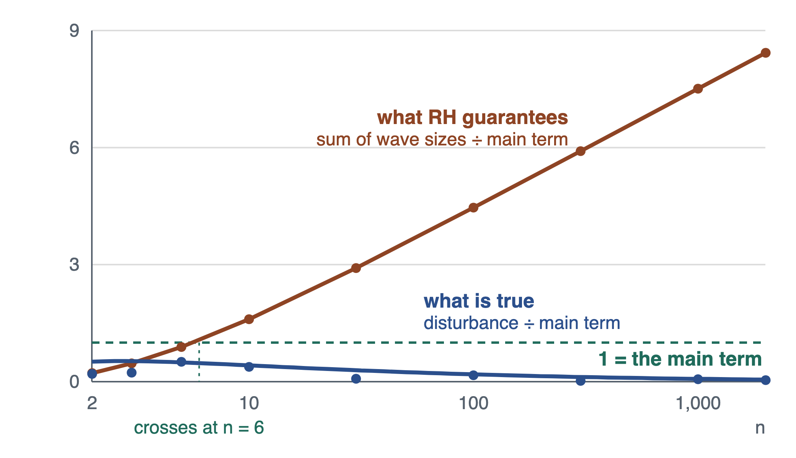
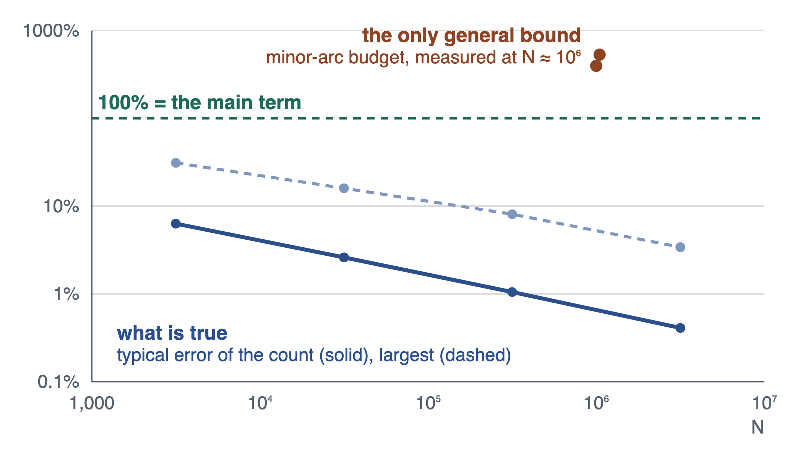
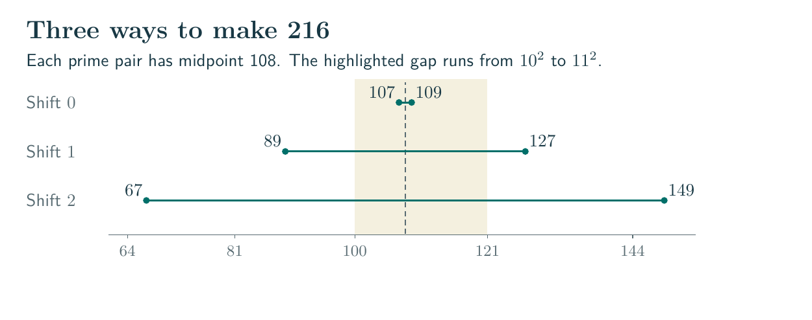
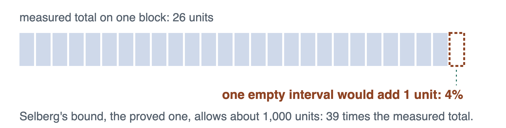

PSG3: Small on Average, Unproved Case by Case — Legendre and Goldbach Measured Against the Proved Riemann Hypothesis
Abstract
The Riemann hypothesis and its generalization to Dirichlet $L$-functions were formalized in Lean in November 2026. We take that proof as a reference case and ask what it gives toward Legendre's and Goldbach's conjectures. Neither is proved here.
1. Introduction
In November 2026 a Lean formalization of the Riemann hypothesis (RH) and of the generalized Riemann hypothesis for Dirichlet $L$-functions (GRH) was released and accepted by independent kernel checks [1, 2]. Our earlier articles RPH4 and RPH5 [3, 4] proposed and then tested a reading of how that proof works, which we call the Riemann proof hypothesis (RPH); a later clarification [5] confirmed one of its predictions against the Lean proof bodies and refuted the other. Alongside RPH we began a companion Prime Sums and Gaps (PSG) series on additive and multiplicative prime structure: PSG1 [65] examined how the $+1$ shift and multiplication generate controlled irregularity in the primes, and PSG2 [18] explored geometric links toward twin primes, Goldbach's conjecture and Legendre's conjecture. This third article, PSG3, brings the two lines together (indexing our individual Goldbach and Legendre findings as GBD and LGD in the project notes while using standard mathematical names throughout the text).
Two elementary conjectures about primes remain open:
- Legendre's conjecture. For every integer $n\ge 1$ there is a prime $p$ with $n^2<p<(n+1)^2$.
- Goldbach's conjecture (the binary Goldbach conjecture). Every even integer $N\ge 4$ is a sum of two primes.
Do the same concepts and tools reach them? This paper answers in three parts. Section 2 fixes the reference case: what the 2026 proof establishes and in what form along its 14-link main dependency path. Sections 3 to 5 write RH, Legendre's conjecture and Goldbach's conjecture in one common form and carry each argument as far as it goes, including primes between consecutive real powers $n^a$ and $(n+1)^a$ for $a\ge 2.226$ and exact spline-sum asymptotics under RH. Section 6 states the relation and the divergences, proves obstructions to both non-negative short weights and unbounded signed weights, proves an unconditional character-energy decomposition for every even $N\ge 4$, proves power-saving strip cancellation inside Li and Liu's residual operator under GRH alongside boundary Hilbert–Schmidt and 57-point reproducing-kernel spectral measurements up to $N=2^{18}$, and proves both a reflected-square Goldbach multiplicity transfer under RH and a self-dual single-gap reflection law at $s_n=2n(n+1)$ tested to $n=25{,}000$. Section 7 organizes all of this by two notions of convergence. Section 8 sets the working concepts of the proof—and the particle–wave duality theorems present in the Lean source—against those of the two conjectures. Section 9 states what is missing, including exact pointwise and Cesàro-smoothed zero identities for Goldbach's count. Annexes A to D record the techniques behind the hypothesis, what is known about each conjecture, and how each source was checked.
What this paper does and does not claim. It proves neither conjecture. Its derived statements (Propositions 1 to 10) follow from RH or GRH together with published theorems or from unconditional arguments; we do not claim historical priority for Propositions 1 to 4 or the classical-estimate corollaries in Propositions 2, 6, 9 and 10, while Proposition 8 strengthens the baseline strip bound of [23]. Its contribution is the common form, the exact statement of each gap, the sharpened real-power threshold $a\ge 2.226$ and spline constants, the unbounded signed-weight barrier, the all-even character-energy identity, the analytic cancellation bound and spectral measurements for Li and Liu's operator, the reflected-square multiplicity and central $s_n=2n(n+1)$ single-gap reflection results, the extraction of the 14-link main-path level sum $G_m$, the $\frac23$-to-$\frac12$ mechanism and particle–wave conversion theorems from the Lean source, the comparison of concepts in Section 8, and reproducible measurements across both conjectures. RH and GRH are used as premises where stated; we have read the public verification evidence of [2] and have not rebuilt the proof.
2. The reference case: what the proof of RH establishes
2.1 The statement
Let $\theta(x)=\sum_{p\le x}\ln p$ and $\psi(x)=\sum_{p^k\le x}\ln p$. The explicit formula writes $$\psi(x)=x-\sum_{\rho}\frac{x^{\rho}}{\rho}-\ln 2\pi-\tfrac12\ln(1-x^{-2}),$$ valid for $x>1$ not a prime power, with one term for each non-trivial zero $\rho=\beta+i\gamma$ of $\zeta$ and the sum taken symmetrically in $\gamma$ (the infinite sum of magnitudes $\sum_\rho 1/|\rho|$ diverges, so unsmoothed bounds truncate at height $T$ with a controlled remainder). Each zero contributes a wave of size $x^{\beta}/|\rho|$. RH states that $\beta=\tfrac12$ for every zero. It is a statement about the size of each wave. It says nothing about the phases $x^{i\gamma}$, that is, about whether waves reinforce or cancel at a given $x$.
2.2 The form of the proof
By the reading of RPH5 [4], checked line by line against the Lean source in [5], the proof ends in a one-sided upper bound on a smoothed sum of the von Mangoldt function over a long range, of the shape $G(x)\le C_\varepsilon x^{1/2+\varepsilon}$. Specifically, tracing all 14 direct declarations on the main exported path (Main.lean $\to$ rhOfAll $\to$ allChi $\to$ everyCharacter $\to$ everyCharacter_of_row $\to$ every_character_of_literature_of_vWin $\to$ every_character_of_theta_integrals_local_matching $\to$ every_character_of_green_v_win $\to$ zero_free_all_of_green_v_win $\to$ zeroFreeAll_of_topG $\to$ level_gm_le_on_family_scales $\to$ windowInequality_of_artinInputs $\to$ core_gm $\to$ ch_core $\to$ proposition_size_bound) shows that proposition_size_bound is applied on the main path to a character-family level sum $G_m$ (GmA - SigA), whereas the untwisted sum $G_z(x)$ is the zeta-only specialization. Landau's theorem on Mellin transforms of non-negative functions converts that bound into the absence of zeros with $\beta>\tfrac12$, and the functional equation gives $\beta=\tfrac12$. Three features of this endpoint matter below:
- The sum is linear in the primes: one von Mangoldt weight per term.
- The sum runs over a long range, $n\le x$, with losses of $x^{\varepsilon}$.
- The conclusion is a location of zeros.
The five theorems exported by the formalization are all statements of zero location [2].
3. One skeleton for three statements
Each of the three statements concerns a count that splits as $$\text{actual}=\text{main term}-\text{disturbance},$$ and each asserts that the disturbance is smaller than something.
| Count | Main term | Disturbance | Assertion | |
|---|---|---|---|---|
| RH | $\psi(x)$ | $x$ | $\sum_\rho x^\rho/\rho$ | at most $x^{1/2+\varepsilon}$, for all $x$ |
| Legendre | weighted primes in $(n^2,(n+1)^2)$ | about $n$ | zero sum restricted to the interval | below the main term, for every $n$ |
| Goldbach | weighted pairs $p+q=N$ | $\mathfrak S(N)N$ | minor arcs | below the main term, for every even $N$ |
The difference between the rows is the subject of this paper. For RH the main term exceeds the target bound by a power of $x$, so it is enough to know the size of each wave. For Legendre's and Goldbach's conjectures the main term is smaller than the trivial bound on the disturbance, by a logarithm, so cancellation must be proved, and it must be proved at each single $n$ or $N$.
4. Legendre's conjecture
4.1 Setup
Fix $n\ge 2$. Let $u_0=\tfrac12(\ln n^2+\ln(n+1)^2)$ and $\delta=\ln\frac{n+1}{n}$, and let $K$ be the cubic B-spline supported on $[-1,1]$ with $\int K=1$. Put $F_n(m)=K((\ln m-u_0)/\delta)$, a non-negative weight supported exactly on $(n^2,(n+1)^2)$. Its Mellin transform is $$\widetilde F_n(s)=\delta,e^{su_0}\left(\frac{\sinh(s\delta/4)}{s\delta/4}\right)^{4},$$ and the explicit formula reads $$P(n):=\sum_m\Lambda(m)F_n(m)=M(n)-Z(n)-T(n),\qquad M(n)=\widetilde F_n(1),\quad Z(n)=\sum_\rho\widetilde F_n(\rho),$$ with $T(n)=\sum_{k\ge1}\widetilde F_n(-2k)$ negligible. Here $M(n)=n+\tfrac12+O(1/n)$. If $|Z(n)|<M(n)-T(n)$ then $P(n)>0$, so the interval contains a prime power. No square lies in the interval, and higher powers contribute $O(\ln^2 n)$.
Under RH, $|\widetilde F_n(\tfrac12+i\gamma)|\le\delta e^{u_0/2}\min(1,(4/\gamma\delta)^4)\cosh^4(\delta/8)$. Let $A(n)=\sum_\rho|\widetilde F_n(\rho)|$ be the sum of these sizes.
4.2 What RH gives
Proposition 1. Assume RH. For every $n\ge2$ there is a prime between $n^2$ and $(n+k)^2$, where $k=\lceil\tfrac{22}{25}\ln n\rceil$.
Proof. Carneiro, Milinovich and Soundararajan [6, Theorem 5] prove under RH that for $x\ge4$ there is a prime in $[x,x+\tfrac{22}{25}\sqrt x\ln x]$. Take $x=n^2$, which is not prime. The interval ends at $n^2+\tfrac{44}{25}n\ln n<n^2+2nk+k^2$ when $k\ge\tfrac{22}{25}\ln n$. $\square$
So this theorem gives Legendre's conjecture itself for $n=2,3$ and no further. At $n=10^6$ it gives a prime before $(n+13)^2$; at $n=7\cdot10^{13}$, before $(n+29)^2$. For large $n$ the constant $\tfrac{22}{25}$ can be replaced by $\tfrac{21}{25}$ [6, Corollary 4]. The authors of [6] note that the limit of their method is the constant $\tfrac12$. So an argument of this kind, with comparison functions of either sign, cannot certify a prime within fewer than about $\tfrac12\ln n$ squares.
Proposition 2. Assume RH. For every real $a\ge\frac{1113}{500}=2.226$ and every integer $n\ge1$ there is a prime strictly between $n^a$ and $(n+1)^a$ (in particular between consecutive cubes, $\tfrac52$-powers and $\tfrac94$-powers); and for every real $a>2$ this holds for all sufficiently large $n$.
Proof. For $n=1$ the prime 2 lies in $(1,2^a)$ since $2^a>4$. Fix $n\ge2$ and $a\ge a_0:=\frac{1113}{500}$, and write $x=n^a$, $y=\sqrt x$, $b=a/2\ge 1.113$, and $X_0=4\cdot 10^{27}$. Suppose first that $x\le X_0$. Then $(n+1)^b-n^b\ge b n^{b-1}\ge 1.113$. Put $j=\lfloor y\rfloor\ge 2$ and $h_j=\sqrt{j(j+1)}$, so $j+0.4<h_j<j+0.5$. Sorenson and Webster [11] verify Oppermann's conjecture, a prime in each open half-interval $(j^2,j(j+1))$ and $(j(j+1),(j+1)^2)$, up to $7.05\cdot 10^{13}$. If $y<h_j$, then $(h_j,j+1)$ lies in $(y,y+1)$; if $y\ge h_j$, then $(j+1,h_{j+1})$ lies in $(y,y+1.1)$. In either case squaring places a verified open Oppermann half-interval strictly inside $(n^a,(n+1)^a)$ with $j+1\le 2\cdot 10^{13}+1<7\cdot 10^{13}$, even if $n^a$ is prime. Suppose now that $x\ge X_0$, and set $d=\frac12-\frac1{a_0}=\frac{113}{2226}$. By convexity $(n+1)^a-n^a>a n^{a-1}=\sqrt x,a x^{1/2-1/a}\ge\sqrt x,a_0 x^d$. Since $\ln X_0>20>1/d$, the ratio $x^d/\ln x$ is strictly increasing on $[X_0,\infty)$, and exact integer arithmetic certifies $1113^{2226}X_0^{113}>(56\cdot 500)^{2226}$ and $\sum_{r=0}^{150}(700/11)^r/r!>X_0$, giving $a_0 X_0^d>56>\frac{22}{25}\ln X_0$. Applying [6, Theorem 5] at $x+\epsilon$ with $\epsilon>0$ small enough excludes $x$ if it is prime and keeps the upper endpoint strictly below $(n+1)^a$. The same large-$x$ inequality holds eventually for any fixed $a>2$. $\square$
Proposition 3. Assume RH. The number of $n\le M$ for which $(n^2,(n+1)^2)$ contains no prime is $O(\log^3M)$.
Proof. Let $N\ge2$ and let $E$ be the number of such $n$ with $N\le n<2N$. For such $n$ and each integer $k\in[n^2,n^2+n]$, the window $(k,k+N]$ lies in the empty gap, so $D(k):=\theta(k+N)-\theta(k)-N=-N$. These sets of $k$ are disjoint for distinct $n$, each has more than $N$ elements, and all lie in $[N^2,4N^2)$. Hence $E,N^3\le\sum_{N^2\le k<4N^2}D(k)^2$. Since $N$ is an integer and $\theta$ is constant on each $[k,k+1)$, this sum equals $\int_{N^2}^{4N^2}(\theta(x+N)-\theta(x)-N)^2dx$ exactly. Under RH, Selberg's theorem [7] bounds the corresponding integral for $\psi$ with fixed width $h$ over $[X,2X]$ by $O(hX\ln^2X)$; the fixed-width form follows from the proportional-width estimate of Saffari and Vaughan [8, Section 6] and their conversion inequality. Replacing $\psi$ by $\theta$ changes the integral by $O(N^2\ln N)$, since each window holds at most one $j$-th power for each $j\ge2$. So the right side is $O(N^3\ln^2N)$ and $E=O(\ln^2N)$. Summing over $N=2^j\le M$ gives the claim. $\square$
Bazzanella [9, Theorem 2] refines this under RH to $O(f(M^2)\ln^2 M)$ exceptional square intervals below $M^2$ for any function $f(X)\to\infty$. The elementary dyadic argument above is given because Sections 7 and 9 turn on its structure.
4.3 Measurements and exact spline constants
All measurements use the code accompanying this paper. Primes come from a sieve to $4.0\cdot10^8$, checked against $\pi(10^8)=5{,}761{,}455$. Zeros are the first $100{,}000$ from Odlyzko's tables [10].
The explicit formula holds numerically. For $2\le n\le500$, $P(n)$ computed from primes and $M(n)-Z(n)-T(n)$ computed from zeros agree to within $1.2\cdot10^{-4}$. For $n\le2000$ they agree to within $0.04$, the size of the omitted zeros.
Both spline constants can be proved under RH, and the sizes add up to more than the main term. Let $S_2(n)=\sum_\rho|\widetilde F_n(\rho)|^2$, counting all non-trivial zeros with multiplicity and both signs. Under RH, writing $v=\delta\gamma$, $\delta e^{u_0/2}\to 1$, and $g_{m,\delta}(v)=|\frac{\sinh(\delta/8+iv/4)}{\delta/8+iv/4}|^m$ for $m=4,8$, the Riemann–von Mangoldt formula gives the scaled positive-ordinate measure $\frac{\delta}{\ln(1/\delta)}\sum_{\gamma>0}\delta_{\delta\gamma}$ the vague limit $\frac{dv}{2\pi}$, while $g_{m,\delta}(v)\ll(1+v)^{-m}$ justifies passing to the limit. By Fourier inversion, $\frac1\pi\int_0^\infty|\operatorname{sinc}(v/4)|^m dv$ equals the density at $0$ of a sum of $m$ independent uniform variables on $[-\tfrac14,\tfrac14]$, namely $\frac{2}{(m-1)!}\sum_{j=0}^{m/2}(-1)^j\binom{m}{j}(\frac m2-j)^{m-1}$, which evaluates to $\frac43$ for $m=4$ and $\frac{302}{315}$ for $m=8$. Hence, on RH, $$A(n)\sim\tfrac43 n\ln n,\qquad S_2(n)\sim\tfrac{302}{315}n\ln n .$$ Empirically $A(n)\ge M(n)$ for every $n$ from $6$ to $2000$, and a fit over $50\le n\le2000$ gives $A(n)/M(n)=1.326\ln n-1.648$, matching the proved slope $4/3$.
The true disturbance is far smaller. The root mean square of $Z(n)/\sqrt{n\ln n}$ is $0.87$ for $100\le n\le2000$. Computed from primes alone as $M(n)-P_\theta(n)$, it is $0.89$ for $10^4\le n\le19{,}998$ (compare the diagonal root $\sqrt{302/315}=0.979$ from $S_2(n)$).
| $n$ | $M(n)$ | $|Z(n)|$ | $A(n)$ | $A/M$ | $|Z|/M$ | |--:|--:|--:|--:|--:|--:| | 10 | 10.5 | 3.97 | 16.8 | 1.60 | 0.38 | | 30 | 30.5 | 2.29 | 88.9 | 2.91 | 0.08 | | 100 | 100.5 | 16.4 | 448.7 | 4.46 | 0.16 | | 300 | 300.5 | 6.34 | 1776.9 | 5.91 | 0.02 | | 1000 | 1000.5 | 62.2 | 7516.4 | 7.51 | 0.06 | | 2000 | 2000.5 | 76.9 | 16872.4 | 8.43 | 0.04 |

No interval is empty, and none is close. For $n\le19{,}998$ every interval contains a prime; the fewest for $n\ge10^4$ is $1{,}044$. Let $V(n)=\min_k(\theta(k+n)-\theta(k))/n$ over $n^2\le k\le n^2+n$. An empty interval gives $V=0$. The minimum of $V$ is $0.20$ at $n=36$, $0.76$ for $10^3\le n<10^4$ and $0.89$ for $n\ge10^4$.
Legendre's conjecture is verified for $n\le7\cdot10^{13}$ by Sorenson and Webster [11].
5. Goldbach's conjecture
5.1 Setup
Let $S(\alpha)=\sum_{p\le N}\ln p,e(p\alpha)$ with $e(t)=e^{2\pi it}$, and let $R(N)=\sum_{p+q=N}\ln p\ln q$ over ordered pairs of primes. Then $$R(N)=\int_0^1S(\alpha)^2e(-N\alpha),d\alpha .$$ Split $[0,1]$ into major arcs $\mathfrak M$, the $\alpha$ within $Q/(qN)$ of a fraction $a/q$ with $q\le Q$, and minor arcs $\mathfrak m$. The major arcs give $\mathfrak S(N)N+E_{\mathfrak M}(N)$ with the singular series $\mathfrak S(N)=2C_2\prod_{p\mid N,,p>2}\frac{p-1}{p-2}$ for even $N$. Goldbach's conjecture holds at $N$ as soon as $|E_{\mathfrak M}(N)|+|I_{\mathfrak m}(N)|<\mathfrak S(N)N$, where $I_{\mathfrak m}$ is the minor-arc integral.
5.2 What RH and GRH give
Proposition 4. Every even $N\ge8$ is a sum of four primes.
Proof. Helfgott [12] proves that every odd integer above 5 is a sum of three primes. For even $N\ge10$ apply this to $N-3$. And $8=2+2+2+2$. $\square$
Three further results are quoted. Chen [13]: every large even $N$ is $p+m$ with $m$ prime or a product of two primes. Under GRH the even $N\le X$ that are not sums of two primes number $O(X^{1/2}\ln^3X)$ (Hardy and Littlewood [14] with $X^{1/2+\varepsilon}$; Goldston [15]). Under RH every interval $[x,x+C\ln^2x]$ contains a sum of two primes [15], so every large even $N$ is $p+q+r$ with $0\le r\le C\ln^2N$.
The mechanism of the exceptional-set bound is the same as in Proposition 3. Fix $X$ and take $S$ with $p\le X$ for all $N\le X$. By Parseval, $\sum_N|I_{\mathfrak m}(N)|^2=\int_{\mathfrak m}|S|^4\le(\sup_{\mathfrak m}|S|)^2\int_0^1|S|^2$. GRH bounds $\sup_{\mathfrak m}|S|$ by about $X^{3/4}$ for a suitable dissection, and $\int|S|^2\approx X\ln X$. An exceptional $N$ needs $|I_{\mathfrak m}(N)|$ of order $N$. Chebyshev's inequality then leaves about $X^{1/2}$ exceptions, up to powers of $\ln X$.
5.3 Measurements
For all $4{,}999{,}999$ even $N$ from 4 to $10^7$ the number $g(N)$ of unordered representations was computed by a discrete Fourier transform and checked against direct counts at four values of $N$. None is zero. The minimum of $g$ over $10^6\le N<10^7$ is $3{,}963$. The last $N$ with $g(N)\le10$ is $632$; the last with $g(N)\le1000$ is $195{,}368$. The published verification reaches $4\cdot10^{18}$ [16].
The count follows its main term. The relative error $R(N)/(\mathfrak S(N)N)-1$ has root mean square $6.3%$, $2.6%$, $1.05%$ and $0.41%$ over the four decades from $10^3$ to $10^7$. Multiplied by $\sqrt N/\ln N$ it is $0.49$, $0.50$, $0.52$, $0.55$. Its largest value in the last decade is $3.4%$. A failure of Goldbach's conjecture needs $-100%$.
The minor arcs are small in truth and large in the only general bound. Because $2Q^2<N$ in each row below, the major arcs around reduced fractions $a/q$ ($q\le Q$) are disjoint on $[0,1)$, so the major- and minor-arc integrals of Section 5.1 are evaluated without grid-mask quadrature error by integrating each rational arc analytically ($w(0)=\frac{2Q}{N}\sum_{q\le Q}\frac{\varphi(q)}{q}$ and $w(k)=\sum_{q\le Q}c_q(k)\frac{\sin(2\pi kQ/(qN))}{\pi k}$ for $k\ne 0$, where $c_q(k)=\sum_{d\mid(q,k)}d\mu(q/d)$), rounded to the nearest integer.
| $N$ | $\mathfrak S(N)$ | $\mathfrak S(N)N$ | $R(N)$ | $Q$ | major | minor, signed | minor, $\int_{\mathfrak m}|S|^2$ | ratio | |--:|--:|--:|--:|--:|--:|--:|--:|--:| | $10^6$ | 1.76 | 1,760,431 | 1,756,442 | 100 | 1,753,319 | 3,123 | 6,975,251 | 3.96 | | $10^6$ | | | | 300 | 1,750,623 | 5,819 | 5,486,863 | 3.12 | | $2^{20}$ | 1.32 | 1,384,460 | 1,387,862 | 100 | 1,382,553 | 5,309 | 7,366,321 | 5.32 | | $2^{20}$ | | | | 300 | 1,388,790 | $-929$ | 5,824,727 | 4.21 | | 1,021,020 | 5.46 | 5,577,498 | 5,568,432 | 300 | 5,413,835 | 154,598 | 5,633,939 | 1.01 |
The last column is $\int_{\mathfrak m}|S|^2$ divided by the main term. The whole of $\int_0^1|S|^2$ is $\sum_{p\le N}\ln^2p\approx N\ln N$, while $\mathfrak S(N)=O(\ln\ln N)$, so the ratio grows with $N$.

What a sieve cannot separate. For $N=10^6$ there are $78{,}498$ numbers $N-p$. Of these, $21{,}168$ have no prime factor up to $N^{1/4}$: $10{,}803$ are prime, $9{,}635$ are products of two primes and $730$ of three. Over all $78{,}498$, $39{,}361$ have an odd number of prime factors and $39{,}137$ an even number.
6. Relation and divergences
6.1 What the three statements share
All three are assertions about one disturbance term. In the data, each disturbance is about the square root of its own main term: $\psi(x)-x$ about $\sqrt x$ against $x$, $Z(n)$ about $\sqrt{n\ln n}$ against $n$, and $R(N)-\mathfrak S(N)N$ about $\sqrt N\ln N$ against $N$. Only the first of these is what RH asserts. The square root in RH is that of the long range $x$; for an interval of length $2\sqrt x$ that quantity is the size of the main term itself. The local square-root behaviour of the second and third is observed and does not follow from RH.
6.2 Where they diverge
| RH | Legendre | Goldbach | |
|---|---|---|---|
| Order in the primes | linear | linear | bilinear |
| Analytic object | zeros of $\zeta$ | zeros of $\zeta$ | no $L$-function for $\Lambda(m)\Lambda(N-m)$ |
| Range of the sum | long, $n\le x$ | short, length $2\sqrt x$ | long, tied by $m+m'=N$ |
| What must be known | size of each wave | cancellation of waves at one point | cancellation on minor arcs for one $N$ |
| What that depends on | location of zeros | joint phases of the zeros at that point | parity of the number of prime factors |
| Trivial bound against target | far below | above by a factor $\ln n$ | above by a factor of order $\ln N/\mathfrak S(N)$ |
| Proved under RH or GRH | the statement itself | all but $O(\log^3M)$ of $n\le M$ | all but $O(X^{1/2}\ln^3X)$ of $N\le X$ |
Divergence 1: size against phase. RH bounds $\sum_\rho x^\rho/\rho$ by adding sizes, and that is enough because the target $x^{1/2+\varepsilon}$ is far above what is needed for a count of size $x$. For Legendre's conjecture the same addition gives $A(n)\approx M(n)(1.33\ln n-1.65)$, above the main term. Section 4.3 shows the true disturbance is smaller than $A(n)$ by a factor of about $1.5\sqrt{n\ln n}$, so the cancellation exists; no theorem delivers it at a prescribed $n$.
Divergence 2: long range against one interval. The proof's endpoint (Section 2.2) bounds a long smoothed sum to within $x^{1/2+\varepsilon}$. A count on an interval of length $2\sqrt x$ obtained by bounding the long sum at each end and subtracting inherits an error of that size, which exceeds the interval's main term $2\sqrt x$. Arguments that apply the explicit formula to the interval directly do better: they reach length $\sqrt x\ln x$, as in Proposition 1 and [6], and stop there for the reason given in Divergence 1.
Divergence 3: linear against bilinear. The proof's endpoint has one prime per term. Goldbach's conjecture has two, tied by addition. The Dirichlet series of $\Lambda(m)\Lambda(m+h)$ has no Euler product and no known continuation, so there are no zeros for a Landau-type argument to exclude.
6.3 What the Lean development contains
A search of the $62{,}088$ Lean files of [2] at revision 4d25b0ed, with a positive control, found no statement naming either conjecture, minor arcs, pair correlation or consecutive squares. It contains two theorems on primes in short intervals. One requires relative width $h$ with $B^7\le hX^{1/3}$, so an absolute width of at least $B^7X^{2/3}$. The other requires $h\ge\exp(-c\sqrt{\ln X})$. Legendre's conjecture needs absolute width $2\sqrt X$. Its sums over primes have one variable.
6.4 The control that history supplies
Over function fields the analogue of RH has been a theorem since Weil, and Stepanov's elementary proof, from which the 2026 proof descends by its author's account [1], dates from 1969. The analogue of the twin prime conjecture was proved there by Sawin and Shusterman [17] in 2022, by other means and for restricted fields. Fifty years of access to RH and its tools did not yield the bilinear problems in that setting.
One link is not empty. Stepanov's method and the argument of [17] both use the vanishing derivative of a $p$-th power in characteristic $p$. The author's remark [1] describes the chain of theta lifts as a substitute for that device over the integers. RPH5 [4] proposed a mechanism for it, and [5] found that part of the proposal unconfirmed. If such a substitute exists in general form, it bears on the obstacle shared by these problems. That is a direction, not a result.
6.5 Three obstructions to a direct transfer, and analytic cancellation in Li and Liu's operator
One may ask whether the inequalities of the proof, as read in RPH5, already give the lower bounds that Legendre's and Goldbach's conjectures need. They do not, for three reasons that can be stated exactly.
The inequality holds at one cutoff. In the Lean source the growth inequality bounds a signed combination of four values of the smoothed sum, all at one argument $x$, under a hypothesis $|a(t)/b-x|\le1$ on the row data. The same data cannot serve two cutoffs more than 2 apart. Consecutive squares differ by $2n+1\ge3$. For $F(y)=\sum_k\Lambda(k)(y/k-1)+$, with $A=n^2$, $B=(n+1)^2$, $c=\tfrac12(A+B)$ and $h=\tfrac12(B-A)$, the second difference $F(A)-2F(c)+F(B)$ equals $\sum_k\Lambda(k)(h-|k-c|)+/k$: a count of the prime powers between the two squares with a tent weight. One-sided upper bounds at each of the three cutoffs give no lower bound for it. This and the two obstructions below rule out the direct deductions. They leave open a joint, signed use of the full arithmetic inequalities.
Proposition 5. Assume RH. Let $W\ge0$ be an integrable weight supported in $[n^2,(n+1)^2]$ with $\int W=M>0$, and let $I_\rho=\int W(t),t^{\rho-1}dt$. Fix $c_0<0.178$. Then for all sufficiently large $n$, uniformly in $W$, $$\sum_{|\gamma|\le0.86,n}|I_\rho|\ \ge\ c_0,M\ln n .$$
Proof. Put $c=n^2+n+\tfrac12$ and $h=n+\tfrac12$, so the support is $[c-h,c+h]$ and $|\ln(t/c)|\le-\ln(1-h/c)=\tfrac1n(1+O(\tfrac1n))$ there. Let $\vartheta=0.86$ and $\rho=\tfrac12+i\gamma$ with $|\gamma|\le\vartheta n$. The integrand of $e^{-i\gamma\ln c}I_\rho$ is $W(t)t^{-1/2}e^{i\gamma\ln(t/c)}$, whose argument stays within $\vartheta(1+O(\tfrac1n))$. Since $W\ge0$ and $t^{-1/2}\ge1/(n+1)$, its real part is at least $(\cos\vartheta-o(1))M/(n+1)$, a bound that depends on $W$ only through $M$. The number of zeros with $|\gamma|\le\vartheta n$ is asymptotic to $\frac{\vartheta n}{\pi}\ln n$. Multiplying gives $(\tfrac{\vartheta\cos\vartheta}{\pi}-o(1))M\ln n$, and $0.86\cos(0.86)/\pi=0.1786$. $\square$
Splitting the range at $|\gamma|=0.43,n$ and rotating each half separately gives the constant $0.43(\cos0.43+\cos0.86)/\pi=0.2137$ by the same argument.
For a smooth weight $W$, to which the explicit formula applies, the main term of $\sum_m\Lambda(m)W(m)$ is $M$. So no choice of a smooth non-negative weight inside the interval rescues an argument that bounds the zeros one at a time: the bound it produces exceeds the main term for all large $n$. Proposition 5 says that the sum of sizes is at least of order $M\ln n$ for every such weight (and Section 4.3 proves the matching asymptotic $\frac43 M\ln n$ for our cubic B-spline). Nor does relaxing compact support rescue magnitude summation: for any continuous $F\in L^1(\mathbb R)$ with $\widehat F\in L^1(\mathbb R)$ whose prime-side weight $\widehat F\bigl(\frac{\ln(m/a)}{2\pi\Delta}\bigr)$ may take negative values outside $[n^2,(n+k)^2]$ and whose positive outside tail is bounded using any upper-sieve density $B\ge 1$, Fourier inversion gives $F(0)-B\int_{[-1,1]^c}(\widehat F)+\le\int{-1}^1\widehat F\le 2|F|1$, while Riemann–von Mangoldt zero density gives $2\pi\Delta\sum\gamma|F(\Delta\gamma)|=(1-o(1))(\ln a)|F|_1$; hence magnitude summation over zeros cannot certify a prime below $k=(\tfrac12-o(1))\ln n$ (and for strict minorants with $\widehat F\le 0$ outside $[-1,1]$, [6, Theorem 2(a.2)] gives $C^+(\infty)<1.2$, blocking $k<\tfrac56(1-o(1))\ln n$), which we verified against $50{,}000$ Odlyzko zeros (A/M = 4.36 and 6.11 at $n=500$).
Proposition 6. Let $N\ge 4$ be any even integer, let $A_\chi=\sum_{p<N}\chi(p)\ln p$ for Dirichlet characters $\chi$ modulo $N$, and write $E_\pm=\sum_{\chi(-1)=\pm1}|A_\chi|^2$. Put $Q_N=\sum_{p<N,,p\nmid N}\ln^2 p$ and $R_{\mathrm{unit}}(N)=R(N)-\mathbf{1}{N/2\text{ prime}}\ln^2(N/2)$. Then $$R(N)=\frac{E+-E_-}{\varphi(N)}+\mathbf{1}{N/2\text{ prime}}\ln^2(N/2),\qquad\frac{E\pm}{\varphi(N)}=\frac{Q_N\pm R_{\mathrm{unit}}(N)}{2},$$ and, unconditionally as $N\to\infty$ through all even integers, $Q_N=N\ln N-N+o(N)$ while $R(N)=O(N\ln\ln N)$, so $E_+/\varphi(N)\sim E_-/\varphi(N)\sim\tfrac12N\ln N$.
Proof. A prime $p<N$ with $\chi(p)=0$ divides $N$; if $p+q=N$ with $q$ also prime, then $p\mid q$, forcing $p=q=N/2$. Orthogonality of characters on $(\mathbb Z/N\mathbb Z)^\times$ therefore gives $(E_+-E_-)/\varphi(N)=R_{\mathrm{unit}}(N)$ and $(E_++E_-)/\varphi(N)=Q_N$. Partial summation from $\theta(x)=x+o(x/\ln x)$, after removing the at most $\omega(N)$ primes dividing $N$ at cost $\le(\ln N)^2$, gives $Q_N=N\ln N-N+o(N)$. By the Selberg upper-bound sieve [37; 69, Proposition 2.2.4], the number of prime pairs $p+q=N$ is $O\bigl(N(\ln N)^{-2}\prod_{p\mid N}(1+1/p)\bigr)$; splitting the product at $\ln N$ via Mertens' estimate gives $\prod_{p\mid N}(1+1/p)=O(\ln\ln N)$ and hence $R(N)=O(N\ln\ln N)$ uniformly for all even $N$ (when $N=2^k$, the prime number theorem modulo a fixed odd squarefree $P$ already gives $R(N)=o(N\ln N)$ without a sieve). $\square$
So $E_+/\varphi(N)$ and $E_-/\varphi(N)$ are each asymptotic to $\tfrac12N\ln N$ across all even $N$, targets $N=2p$ are trivial, and at every other even $N$ Goldbach's conjecture is equivalent to $E_->E_+$ failing, that is, $E_+>E_-$. The approach is slow: at $N=2^{22}$ we measure $Q_N/(N\ln N)=0.934$ and $R(N)/(N\ln N)=0.086$. The total $Q_N$ is known precisely; what is not known is how $\varphi(N)Q_N$ divides between $E_+$ and $E_-$, and that division is $R_{\mathrm{unit}}(N)$ itself. Upper bounds on the individual $A_\chi$ alone cannot supply it. Under GRH each non-principal $|A_\chi|$ is $O(\sqrt N\ln^2N)$ while the normalized principal term $|A_{\chi_0}|^2/\varphi(N)=O(N^2/\varphi(N))=O(N\ln\ln N)$, giving $E_-/\varphi(N)=O(N\ln^4N)$, weaker than the bound $Q_N$ that orthogonality gives for free. And even bounds of the best possible size are not enough, as the following example at $N=2^k\ge 8$ shows. Index the units modulo $N$ as $\pm5^j$, $0\le j<N/4$, and select one of each pair ${5^j,-5^j}$ by the signs of a Rudin–Shapiro polynomial. The selected set has no element $a$ with $-a$ also selected, so its overlap is zero. Its principal character sum is $N/4$. Yet every non-principal even character sum vanishes and every odd one is at most $\sqrt{\varphi(N)}$ in absolute value. Square-root cancellation in every non-principal character sum is therefore compatible with no representation at all. The example uses artificial weights without the Euler products of the primes; it refutes the inference, not the conjecture.
A conditional route of the right shape, and proved strip cancellation inside its operator. Li and Liu [23] express the error of a smoothed Goldbach count as a signed quadratic form $\langle T_Nv_N,v_N\rangle$ built from the odd characters modulo $N$ itself, and prove Goldbach's conjecture for all large even $N$ under GRH together with a spectral hypothesis on the residual operator $T_N=P_N-D_N-K_N$ (their Hypothesis S; the identity is stated under GRH for even $N>e^{10}$). This is the kind of statement Proposition 6 calls for: a signed, bilinear estimate uniform in $N$. In [23, Proposition 6.5 and Section 6.5], $P_{N,\alpha}$, $D_{N,\alpha}$ and $K_{N,\alpha}$ on the Hardy strip $\alpha<\operatorname{Re}s<\tfrac18$ are bounded separately by the triangle inequality without cancellation, yielding only $|\widehat T_{N,\alpha}|_{\mathrm{HS}}\ll\ln^2N+\alpha^{-2}$, which diverges even on a fixed strip. Cancelling the diagonal primes analytically before taking norms gives a power-saving decay under GRH alone:
Proposition 8. Assume GRH for all Dirichlet characters modulo an even integer $N\ge 16$. Let $\widehat T_{N,\alpha}=P_{N,\alpha}-D_{N,\alpha}-K_{N,\alpha}$ be the residual operator of [23, Section 6.5] on the Hardy strip $\alpha<\operatorname{Re}s<\tfrac18$, with $0<\alpha<\tfrac1{10}$. Then $$|\widehat T_{N,\alpha}|\le|\widehat T_{N,\alpha}|_{\mathrm{HS}}\ll\alpha^{-2}\min(\ln N,\alpha^{-1})(N/4)^{-\alpha}\ln N+\alpha^{-4}(N/4)^{-2\alpha}(\ln N)^2 .$$
Proof. By [23, Proposition 5.3], $|\widehat T_{N,\alpha}|{\mathrm{HS}}$ equals the $L^2(\Gamma{N,\alpha}\times\Gamma_{N,\alpha})$ norm of its weighted kernel on $\Gamma_{N,\alpha}=(\alpha+i\mathbb R)\cup(\tfrac18+i\mathbb R)$. Put $w_N(n)=1$ for $n\le N/4$, $\ln(N/(2n))/\ln 2$ for $N/4<n<N/2$, and $0$ for $n\ge N/2$. Shifting the Perron integral with kernel $((N/2)^v-(N/4)^v)/(v^2\ln 2)$ across the zeros of $L(\tfrac12+s+v,\chi)$ writes $-\frac{L'}{L}(\tfrac12+s,\chi)=P_{\chi,N}(\tfrac12+s)+E_{\mathrm{Perron}}(\chi,s)$ for each odd character $\chi$ modulo $N$, where $P_{\chi,N}(u)=\sum_{n<N/2,,(n,N)=1}\Lambda(n)w_N(n)n^{-u}$ and, under GRH, $|E_{\mathrm{Perron}}(\chi,\sigma+it)|\ll\sigma^{-2}(N/4)^{-\sigma}\ln(N(|t|+2))$ for $\sigma\in{\alpha,\tfrac18}$. Since $1\le m,n<N/2$ implies $m+n<N$ and $|m-n|<N$, orthogonality over the odd characters modulo $N$ gives $\frac2{\varphi(N)}\sum_{\chi(-1)=-1}P_{\chi,N}(\tfrac12+s)\overline{P_{\chi,N}(\tfrac12+z)}=\sum_{n<N/2,,(n,N)=1}\Lambda(n)^2w_N(n)^2n^{-1-s-\bar z}$, which cancels every $n\le N/4$ term of $D_N(s+\bar z)$ identically. The remaining diagonal series $D_N^{\mathrm{tail}}$ has non-negative coefficients $\Lambda(n)^2(1-w_N(n)^2)$ supported on $n>N/4$, so its boundary operator is positive and trace-class with $|\mathcal D_N^{\mathrm{tail}}|{\mathrm{HS}}\le\operatorname{tr}\mathcal D_N^{\mathrm{tail}}\le 2\pi\sum{n>N/4}\Lambda(n)^2n^{-1-2\alpha}\ll\alpha^{-2}(1+\alpha\ln N)(N/4)^{-2\alpha}$. By orthogonality again, the character mean of $|P_{\chi,N}(\tfrac12+\cdot)/(1+\cdot)|{L^2(\Gamma{N,\alpha})}^2$ is $O(\min(\ln^2N,\alpha^{-2}))$, while that of $|E_{\mathrm{Perron}}(\chi,\cdot)/(1+\cdot)|{L^2(\Gamma{N,\alpha})}^2$ is $O(\alpha^{-4}(N/4)^{-2\alpha}\ln^2N)$; Cauchy–Schwarz in $\chi$ bounds the cross terms. Finally, in [23, (6.16)], bounding each odd prime factor of $\mathfrak S(N)P_N(\sigma)$ by $\frac{p-1}{p-2+p^{-\sigma}}<\frac{p-1}{p-2}$ instead of $p^\sigma$ preserves $|N^{-(s+\bar z)}|\le N^{-2\alpha}$ on $\Gamma_{N,\alpha}$ and gives $|K_{N,\alpha}|_{\mathrm{HS}}\ll\alpha^{-2}\mathfrak S(N)N^{-2\alpha}$. $\square$
Proposition 8 shows that GRH alone forces $|\widehat T_{N,\alpha}|{\mathrm{HS}}\to0$ on every strip with $\alpha\ge\frac{5\ln\ln N}{\ln N}$, and in the Riesz bound $Q\alpha|\widehat T_{N,\alpha}|$ of [23, Section 6.5], where $Q_\alpha\asymp N^{2\alpha}$, it cuts $N^{2\alpha}$ to $N^\alpha$. This locates the exact analytic barrier at $\alpha_N=1/\ln N$: odd characters modulo $N$ diagonalize prime pairs only up to $N/2$ (saving $N^{-\alpha}$), whereas beating $Q_\alpha\asymp N^{2\alpha}$ requires off-diagonal prime-pair cancellation past $N^2$. Evaluating the exact boundary kernel at $\alpha_N=1/\ln N$ for $N=2^{13},2^{14},2^{15},2^{16}$ reveals that this second stage of cancellation actually occurs in the data: $|P_N|{\mathrm{HS}}$ rises from $25.9$ to $35.9$ and $|D_N|{\mathrm{HS}}$ from $33.2$ to $43.6$, their difference $|P_N-D_N|{\mathrm{HS}}$ drops to $7.50\text{–}8.07$ matching $|K_N|{\mathrm{HS}}$ ($7.50\text{–}8.14$) to within $1%$ because both share the leading double pole $-N^{-w}/w^2$ at $w=s+\bar z=0$, and subtracting $K_N$ collapses $|T_N|{\mathrm{HS}}$ to $0.90,0.72,0.63,0.58$ ($152$ times below the triangle-inequality sum at $N=2^{16}$, with $|T_N|=0.45,0.44,0.37,0.38$). Since $Q{\alpha_N}$ is bounded [23, Proposition 7.4], any scalar trace bound $\operatorname{Tr}(T_N^2)=|T_N|{\mathrm{HS}}^2=o(\mathfrak S(N)^2)$ already implies Goldbach's conjecture for large even $N$ without eigenvector control. Moreover, in [23, Section 6.1], the quaternionic determinant $X_N(q)=\det(I-4\delta_N^{-2}q(1-q)T_N^2)$ has no Euler product and its functional equation $X_N(1-q)=X_N(q)$ is the algebraic symmetry of $q(1-q)$ for any self-adjoint operator, making their stronger Hypothesis R ($\operatorname{Re}q=\tfrac12$) algebraically identical to $|T_N|\le\delta_N:=\sqrt{\mathfrak S(N)(\ln N)^3/N}$. Evaluating certified 57-point reproducing-kernel Rayleigh–Ritz lower bounds on worst-case powers of two $N=2^{15},2^{16},2^{17},2^{18}$ (up to $65{,}536$ odd Dirichlet $L$-functions, where $\mathfrak S(2^k)=2C_2$ is minimal) yields $|T_N|{\mathrm{RKHS}}/\delta_N=0.413,0.641,0.487,0.344<1$, indicating that $\delta_N$ tracks the true operator-norm scale at $\alpha_N=1/\ln N$ while the smooth Riesz-vector projection $|\langle T_Nv_N,v_N\rangle|/Q_{\alpha_N}$ sits roughly a hundredfold smaller ($\le 0.0069,\delta_N$).
6.6 Reflected square intervals and repeated Goldbach representations
Can the multiplicity idea of RPH5 do measurable constructive work for Goldbach's conjecture inside square intervals? For Legendre's conjecture the interval $(n^2,(n+1)^2)$ is rigid, whereas a prescribed sum $s=p+q$ lets its two summands move in opposite directions across disjoint reflected pairs of square half-intervals. Because $(n-j)^2+(n+j)^2=2n^2+2j^2$, the linear terms $\mp 2nj$ cancel and only the quadratic drift $2j^2$ remains. At $n=10$, for instance, $216=107+109=89+127=67+149$ receives prime pairs from the square-interval pairs $(10,10)$, $(9,11)$ and $(8,12)$.

Write $I_r=(r^2,r^2+r]$ for the lower half of the $r$-th square gap, let $A_r$ be the set of primes in $I_r$, and let $B_n$ be the $2n$ even integers in $(2n^2,2n^2+4n]$.
Proposition 9. Assume RH. There exist absolute constants $c>0$ and $D>0$ such that for every sufficiently large $n$ and every integer $D(\ln n)^2\le J\le\lfloor\sqrt n\rfloor$, at least $cn$ even integers $s\in B_n$ have the property that for at least $cJ$ distinct shifts $1\le j\le J$ there are at least $cn/(\ln n)^2$ prime pairs $s=p+q$ with $p\in A_{n-j}$ and $q\in A_{n+j}$ (all distinct across shifts, with $|p-s/2|\le 2nj+\tfrac12(n+j)$). Moreover, apart from $O(\ln^3 M)$ central indices $n\le M$, the single half-interval $A_n$ already gives at least $cn$ even integers in $B_n$ at least $cn/(\ln n)^2$ unordered representations each.
Proof. Call $r\ge 2$ poor if $|A_r|<r/(128\ln r)$. On a dyadic block $Y\le r<2Y$, take $h=\lfloor Y/4\rfloor$. For poor $r$ and large $Y$, $\sum_{p\in I_r}\ln p\le 6Y/128$ and higher prime powers in $I_r$ contribute $O(\ln^2 Y)$, so every $u\in[r^2,r^2+h]$ has $(u,u+h]\subset I_r$ and $\psi(u+h)-\psi(u)\le h/2$. These intervals $[r^2,r^2+h]$ are disjoint and each contributes at least $h^3/4$ to $\int_{Y^2}^{4Y^2}|\psi(u+h)-\psi(u)-h|^2du$, which under RH is $O(Y^2h\ln^2Y)$ by Grenié, Molteni and Perelli [66, Proposition 1]; hence at most $O(\ln^2Y)$ indices in $[Y,2Y)$ are poor. Next, if $A,B$ are prime sets in intervals of length $\asymp n$ with $a=|A|,b=|B|\gg n/\ln n$ and $A+B\subset B_n$, Ramaré's translated-interval restriction estimate at $h=2$ [67, Corollary 9.3] bounds $F_A(t)=\sum_{p\in A}e(pt)$ by $\int_0^1|F_A(t)|^4dt\ll na^2/\ln^2 n$, and similarly for $F_B$. Writing $R_{A,B}(s)=#{(p,q)\in A\times B:p+q=s}$, Parseval and Cauchy–Schwarz give $\sum_s(R_{A,B}(s)/(ab))^2=(a^2b^2)^{-1}\int_0^1|F_A F_B|^2dt\ll n/(ab\ln^2 n)\ll 1/n$. Since $\sum_s R_{A,B}(s)/(ab)=1$, targets with $R_{A,B}(s)<ab/(4n)$ carry at most $\tfrac12$ of the mass, and Cauchy–Schwarz on the remaining set forces at least $c_0 n$ targets in $B_n$ to receive $\ge ab/(4n)\gg n/\ln^2 n$ pairs (taking $A=B=A_n$ gives the same-interval statement outside the $O(\ln^3 M)$ poor indices $n\le M$). Finally, for $1\le j\le J\le\lfloor\sqrt n\rfloor$, $A_{n-j}+A_{n+j}\subset(2n^2+2j^2,2n^2+2j^2+2n]\subset B_n$. At most $C\ln^2 n$ poor indices lie in $[n-J,n+J]$, so for $D\ge 2C$ at least $g\ge J/2$ shifts have both $n-j$ and $n+j$ non-poor, yielding at least $c_0 ng$ shift–target incidences; since $|B_n|=2n$ and each target appears in at most $g$ shifts, at least $\tfrac12 c_0 n$ targets occur for at least $\tfrac14 c_0 g$ shifts. $\square$
In exact sieve checks across $7{,}596$ shift families at $500$ central indices ($24{,}076$ complement counts), $3{,}524$ of the $8{,}192$ even targets in $B_{4096}$ clear the threshold $R_{A_{n-j},A_{n+j}}(s)\ge |A_{n-j}||A_{n+j}|/(4n)$ for at least $32$ of the $64$ shifts (a restricted control retaining only primes $p\equiv 1\pmod 3$ at $n=64$ leaves $116$ pairs whose sums all lie in $2\pmod 3$, showing why incidence counting allows individual residue-locked misses on artificial subsets). Compared with Coppola and Laporta's unconditional almost-all bound at summand radius $X^{5/8+\varepsilon}$ [70] and Grimmelt's short-interval Goldbach coverage [71], Proposition 9 supplies $\asymp cJ$ disjoint square-interval families hitting the same targets even if the central $I_n$ were poor, while isolating a sharp joint link at $s_n=2n(n+1)$: every $j\ge 1$ pair straddles the central gap ($p<n^2<(n+1)^2<q$), whereas $j=0$ confines both summands to the single gap $(n^2,(n+1)^2)$ itself.
Proposition 10 (central square-gap Goldbach reflection). For each integer $n\ge 2$, put $s_n=2n(n+1)$, let $\rho_{s_n}(x)=s_n-x$, let $f_n(x)=\mathbf{1}{\mathbb P\cap(n^2,(n+1)^2)}(x)\ln x$, $f_n^\pm=\tfrac12(f_n\pm\rho{s_n}f_n)$, and $R_{\mathrm{sq}}(n)=\sum_{p+q=s_n,,n^2<p,q<(n+1)^2}\ln p\ln q$. Then:
(i) Because $(n^2+1)+(n^2+2n-1)=s_n$ while both $n(n+1)$ and the top integer $n^2+2n=n(n+2)$ in $(n^2,(n+1)^2)$ are composite, $\rho_{s_n}$ maps $[n^2+1,n^2+2n-1]$ bijectively onto itself without fixed primes and preserves $f_n$ on $(n^2,(n+1)^2)$; hence $R_{\mathrm{sq}}(n)>0$ implies both Legendre's conjecture at $n$ (with at least two distinct primes in $(n^2,(n+1)^2)$) and Goldbach's conjecture at $s_n$.
(ii) Unconditionally, $R_{\mathrm{sq}}(n)=|f_n^+|_2^2-|f_n^-|_2^2=O\bigl(n,\mathfrak S(s_n)\bigr)=O(n\ln\ln n)$.
(iii) Assume RH. Apart from $O(\ln^3 M)$ indices $n\le M$, $|f_n^+|_2^2+|f_n^-|2^2=\sum{n^2<p<(n+1)^2}\ln^2 p\asymp n\ln n$ and $|f_n^-|_2^2/|f_n^+|_2^2=1+O\bigl(\mathfrak S(s_n)/\ln n\bigr)\to 1$.
Proof. (i) Every integer in $(n^2,(n+1)^2)$ lies in $[n^2+1,n^2+2n-1]\cup{n(n+2)}$, and for $n\ge 2$ both $n(n+2)$ and the midpoint $n(n+1)$ are composite. (ii) Polarization on $[n^2+1,n^2+2n-1]$ gives $R_{\mathrm{sq}}(n)=|f_n^+|2^2-|f_n^-|2^2$. For $z=n^{1/4}$, any prime pair $p+q=s_n$ in $(n^2,(n+1)^2)$ with $p>z$ (true for all $n\ge 2$) gives an integer $m=p\in(n^2,(n+1)^2)$ with $\gcd(m(s_n-m),\prod{\ell\le z}\ell)=1$. For squarefree $d\le z^2=n^{1/2}$, the congruence $m(s_n-m)\equiv 0\pmod d$ has $\nu(d)=\prod{\ell\mid d}\nu(\ell)$ roots modulo $d$ ($\nu(\ell)=1$ if $\ell\mid s_n$, else $2$), so on the interval of length $2n-1$ the remainder satisfies $|r_d|\le 2^{\omega(d)}$ and $\sum_{d_1,d_2\le z}|r_{[d_1,d_2]}|\le\sum_{d\le n^{1/2}}6^{\omega(d)}\ll n^{1/2}\ln^5 n$. Selberg's sieve [37] therefore bounds the pair count by $O\bigl(n(\ln z)^{-2}\prod_{\ell\mid s_n,,\ell>2}\frac{\ell-1}{\ell-2}\bigr)=O\bigl(n,\mathfrak S(s_n)/\ln^2 n\bigr)$, and multiplying by $\ln p\ln q\le 4\ln^2(n+1)$ gives $O(n,\mathfrak S(s_n))$. (iii) By Step 1 of Proposition 9 and the Brun–Titchmarsh inequality, outside $O(\ln^3 M)$ indices $n\le M$ we have $|A_n|\ge n/(128\ln n)$ and hence $n\ln n\ll\sum_{n^2<p<(n+1)^2}\ln^2 p=|f_n^+|_2^2+|f_n^-|_2^2\ll n\ln n$; combining with (ii) gives $|f_n^-|_2^2/|f_n^+|_2^2\to 1$. $\square$
We evaluated the unordered pair count $g_{\mathrm{sq}}(n)$ and $R_{\mathrm{sq}}(n)$ across all $25{,}000$ square gaps $1\le n\le 25{,}000$ ($s_n\le 1.25\cdot 10^9$, primes sieved past $6.25\cdot 10^8$). Exactly eight small gaps have $g_{\mathrm{sq}}(n)=0$, namely $n\in{17,19,46,58,64,67,85,367}$ (at each of which $(n^2,(n+1)^2)$ still contains primes and $s_n$ still has $j\ge 1$ Goldbach pairs), and no failure occurs for $368\le n\le 25{,}000$ ($24{,}633$ consecutive square gaps; $\min_{n\ge 1000}g_{\mathrm{sq}}(n)=3$ at $n=1327$, $\min_{n\ge 10000}g_{\mathrm{sq}}(n)=28$ at $n=10{,}462$). Normalized by the local Hardy–Littlewood prediction $2n,\mathfrak S(s_n)$, the mean of $R_{\mathrm{sq}}(n)/(2n,\mathfrak S(s_n))$ is $0.999$, $1.005$ and $1.001$ on $[100,1000)$, $[1000,5000)$ and $[5000,25{,}000]$ (standard deviations $0.31,0.17,0.093$), while $|f_n^-|_2^2/|f_n^+|_2^2$ rises from $0.48$ at $n=100$ and $0.67$ at $n=1000$ to $0.84$ at $n=25{,}000$.
6.7 A correction to PSG2 (NOU-2026-020)
Our article PSG2 [18] illustrated the gap between RH and Legendre's conjecture with the first 200 zeros at $n=150$, reporting that the sum of sizes, $497.9$, exceeds the budget $301$. That sum was taken with a sharp cutoff and depends on the number of zeros: it is $187$ with $50$ zeros and $1{,}875$ with $20{,}000$, and it diverges. The comparison in Section 4.3 uses a weight whose sum of sizes converges, and replaces that figure.
7. Convergence
Write $r$ for the normalized disturbance. For Legendre's conjecture, with $N\le n<2N$, put $r(k)=D(k)/N$ for $N^2\le k<4N^2$, where $D(k)=\theta(k+N)-\theta(k)-N$; an interval without a prime gives $r(k)=-1$ at more than $N$ consecutive $k$. For Goldbach's conjecture put $r(N)=(R(N)-\mathfrak S(N)N)/(\mathfrak S(N)N)$; an $N$ without a representation gives $r(N)=-1$. In the data $r$ tends to $0$ in both problems. Two distinctions organize what precedes.
7.1 The triangle inequality against cancellation
The disturbance is a sum of terms with phases: over zeros for Legendre's conjecture, over frequencies for Goldbach's conjecture. One way to bound it is to add the sizes of the terms. For Legendre's conjecture that gives $A(n)$, which is finite for our weight and exceeds the main term by a factor of order $\ln n$; by Proposition 5 every non-negative weight inside the interval loses at least a factor of that order. For Goldbach's conjecture it gives $\int_{\mathfrak m}|S|^2$, which Parseval bounds by about $N\ln N$ without any hypothesis and which exceeds the main term. RH fixes the size of each zero term. GRH bounds $\sup_{\mathfrak m}|S|$, which helps an average over $N$ and not a single $N$. Both conjectures need the terms to cancel. That the sizes do not decide the signed sum is shown outright by the example after Proposition 6, where every non-principal character sum has square-root size and the overlap is zero.
7.2 Convergence in mean against convergence at every instance
Over instances, RH and GRH give convergence in mean square. For Legendre's conjecture, Proposition 3 rests on $\sum_{N^2\le k<4N^2}D(k)^2=O(N^3\ln^2N)$, so the mean of $r^2$ over a dyadic block is $O(\ln^2N/N)$. For Goldbach's conjecture, GRH gives a mean of $r^2$ over $N\le X$ of $O(X^{-1/2+\varepsilon})$. Hence $r\to0$ for almost all instances: Proposition 3 and the exceptional-set bound of Section 5.2. The conjectures ask that $r$ stay away from $-1$ at every instance. Chebyshev's inequality passes from a mean to every instance when the total over a block is less than the cost of one failure.
Proposition 7 (moment criterion). Let $j\ge1$ be an integer.
(i) If $\sum_{N^2\le k<4N^2}D(k)^{2j}<N^{2j+1}$, then every interval $(n^2,(n+1)^2)$ with $N\le n<2N$ contains a prime.
(ii) If $\sum_{X<N\le2X,\ N\text{ even}}\bigl(R(N)-\mathfrak S(N)N\bigr)^{2j}<(2C_2X)^{2j}$, then every even $N$ in $(X,2X]$ is a sum of two primes.
Proof. (i) As in Proposition 3, an interval without a prime gives more than $N$ values of $k$ with $D(k)=-N$. (ii) Every term of $R(N)$ is positive, so $R(N)=0$ exactly when $N$ has no representation, and then its term is $(\mathfrak S(N)N)^{2j}>(2C_2X)^{2j}$. $\square$
The left sides divided by the right sides, measured:
| Legendre, $N$ | $j=1$ | $j=2$ | Goldbach, $X$ | $j=1$ | $j=2$ | |
|---|---|---|---|---|---|---|
| 100 | 12.0 | 1.59 | $10^3$ | 21.1 | 2.31 | |
| 300 | 15.6 | 0.85 | $10^4$ | 33.6 | 0.74 | |
| 1000 | 20.0 | 0.39 | $10^5$ | 54.8 | 0.20 | |
| 3000 | 22.0 | 0.16 | $10^6$ | 86.1 | 0.052 | |
| 9999 | 25.8 | 0.067 | $5\cdot10^6$ | 111.5 | 0.017 |
As a control, an empty interval planted at $n=1500$ raises the two Legendre ratios at $N=1000$ by $2.6$ and $2.4$.
The second moment on a full dyadic block. For $j=1$ the measured total exceeds the cost of one failure. The ratio divided by $\ln N$ is between $2.6$ and $2.9$ for Legendre's conjecture, and divided by $\ln^2X$ it is between $0.40$ and $0.47$ for Goldbach's conjecture. If the totals keep this growth, as the conjectured variance of [19] predicts for Legendre's conjecture, then the criterion with $j=1$ on a full dyadic block fails however sharp the bound. The same criterion on a block shorter by a factor of order $\ln N$, or $\ln^2X$, would succeed at the true value; the local condition of Section 9.1, a second moment over $n$ consecutive values of $k$, is the extreme case, with measured ratio at most $0.010$. No bound of the needed strength is known on such short blocks.
How far the hypotheses are from the measured second moment. Here the two conjectures part. For Legendre's conjecture, Selberg's bound under RH is $O(N^3\ln^2N)$ against a measured total of about $2.8,N^3\ln N$: one logarithm. For Goldbach's conjecture, GRH gives $O(X^{5/2+\varepsilon})$ against a measured total of about $0.8,X^2\ln^2X$: a power of $X$. The exceptional sets reflect this. $O(\log^3M)$ for Legendre's conjecture is what a nearly true variance leaves. $O(X^{1/2}\ln^3X)$ for Goldbach's conjecture is the loss in the GRH bound; the measured second moment would leave only $O(\ln^2X)$ possible failures in a dyadic range.
The fourth moment on a full dyadic block. For $j=2$ the measured total is below the cost of one failure from about $N=300$ and $X=10^4$. The margin grows like $N/\ln^2N$ for Legendre's conjecture, where the ratio times $N/\ln^2N$ is $8.2$, $7.6$, $7.9$ at $N=1000$, $3000$, $9999$, and like $X/\ln^4X$ for Goldbach's conjecture, where the ratio times $X/\ln^4X$ is between $1.0$ and $1.5$ over the four largest blocks. The ratio of the mean of $D^4$ to the square of the mean of $D^2$ is $3.0$ for $N$ from 1000 to 9999, the Gaussian value, in line with [19]. If the margin persists, a fourth-moment bound weaker than the truth by less than the margin would give each conjecture for all large instances. What follows from the hypotheses by one application of Hölder's inequality is not enough. For Legendre's conjecture, the Brun–Titchmarsh inequality gives $-N\le D(k)\le(3+o(1))N$ without any hypothesis, so under RH $\sum D^4\le\max D^2\cdot\sum D^2=O(N^5\ln^2N)$, above the threshold $N^5$ by two logarithms (and by a single logarithm under RH with pair correlation). For Goldbach's conjecture, GRH gives $O(X^{9/2+\varepsilon})$, above the threshold $X^4$ by a power.
7.3 What the comparison shows
In both problems the hypotheses give convergence in mean square, the conjecture needs every instance, and the same criterion measures the distance. The distance differs. For Legendre's conjecture the hypothesis nearly reaches the true second moment, and the remaining logarithm is the one that appears in Proposition 1, in Proposition 5 and in Section 4.3. For Goldbach's conjecture the hypothesis is a power of $X$ from the true second moment.
The moment criteria are multilinear in the primes although condition (L) itself is linear. For Legendre's conjecture the second moment is a sum of correlations of pairs of primes at distance up to $N$; RH bounds it from above to within a logarithm and does not give its asymptotic, which is of the strength of the pair correlation conjecture. For Goldbach's conjecture, $R(N)$ is already bilinear, so its second moment counts solutions of $a+b=c+d$ in primes, a four-point quantity, and its fourth moment an eight-point one. The two families differ: differences of primes for Legendre's conjecture, sums for Goldbach's.
A failure of Legendre's conjecture occupies more than $N$ consecutive values of $k$, and a failure of Goldbach's conjecture a single $N$. This enters the cost of one failure in Proposition 7. It does not account for the different exceptional sets, which come from the different quality of the second-moment bounds.
8. The concepts of the proof against the concepts of the conjectures
Sections 6 and 7 compared statements. This section compares working concepts. For each concept of the proof, as read in RPH and set out in Annex A, we ask what plays its role in Legendre's conjecture and in Goldbach's conjecture. Each paragraph says whether its content is a theorem, a measurement or an analogy.
8.1 Positivity
Positivity appears in three places around the proof. The von Mangoldt weights are non-negative, which is what Landau's theorem needs. The slope inequality rests on the fact that a non-zero integer has absolute value at least 1. And RH itself can be restated, by Weil's criterion [53], as the positivity of a Hermitian form on a whole space of test functions; that is a restatement of the hypothesis, not a step of the proof.
Legendre's conjecture. The same non-negativity makes $\theta$ monotone. A failure of Legendre's conjecture therefore cannot be isolated: it persists over more than $N$ consecutive windows. That is the content of Proposition 3, and it is a partial transfer of positivity: it gives all but $O(\log^3M)$ instances and not all.
Goldbach's conjecture. Let $f(a)=\ln a$ for $a$ prime, $a<N$, and $0$ otherwise, and let $\rho_N$ be the reflection $(\rho_Nf)(a)=f(N-a)$. Then $R(N)=\langle f,\rho_Nf\rangle$. Since $\rho_N$ is a self-adjoint involution, with $f_\pm=\tfrac12(f\pm\rho_Nf)$, $$R(N)=|f_+|^2-|f_-|^2,\qquad|f_+|^2+|f_-|^2=\sum_{p<N}\ln^2p .$$ This identity holds for every $N$; it is polarization, and Proposition 6 is its form in characters on the units modulo $N$. For even $N$ the two eigenspaces of $\rho_N$ have dimensions $N/2$ and $N/2-1$. The two parts are nearly equal: $|f_-|^2/|f_+|^2=0.83$ at $N=2^{22}$, and by Proposition 6 the ratio tends to 1 unconditionally through all even $N\to\infty$. We use this as an image and not as a characterization, since any real quantity can be written as a difference of two squares. What the image records is specific: Goldbach's conjecture compares two quantities of the same leading order, and no general principle orders them. Weil's criterion, by contrast, asserts the sign of a form on a whole space.
Sieve theory meets a related limit. Selberg's parity phenomenon [21] bounds what can be decided from the distribution of a sequence in arithmetic progressions. Bilinear information can pass that limit, as in the theorems on primes of the form $x^2+y^4$ and $x^3+2y^3$ (from memory); no such information is known for $N-p$.
8.2 Room in an auxiliary space
Stepanov's method, and the proof after it, first shows that an auxiliary object exists, by counting: more free parameters than conditions. By the reading of RPH5 the proof buys this room at a high price, with unitary groups of rank $x^{9/2}$ over a field of degree $2x^2$, and counts it with Siegel's mass formula and Weyl's dimension formula.
Legendre's conjecture. The weights supported in the interval live on a logarithmic length $2\delta\approx2/n$, so the Mellin transform of such a weight on the critical line is an entire function of exponential type $\delta$. Asymptotically a fixed function of that type has about $2T/(\pi n)$ zeros of height up to $T$, while $\zeta$ has about $\frac T\pi\ln T$ (both from memory). Support alone, however, does not forbid annihilating any prescribed finite list of zeros: if $b\ge 0$ is a smooth bump compactly supported in $(\ln n^2,\ln(n+1)^2)$ with Laplace transform $B(s)=\int b(u)e^{su}du$ and $P$ is a real polynomial vanishing at the chosen zeros and their conjugates with $P(1)\ne 0$, then $W(e^u)=\frac{P(-d/du)b(u)}{P(1)B(1)}$ keeps the same support and unit mass while integration by parts gives $\widetilde W(s)=\frac{P(s)B(s)}{P(1)B(1)}$. What that signed construction forfeits is non-negativity and a uniform $L^1$ bound. Proposition 5 supplies the genuine obstruction when non-negativity ($W\ge 0$) and support in the interval are imposed together: the low zero terms stay nearly in phase with the main term, forcing $\sum_{|\gamma|\le 0.86n}|I_\rho|\gg M\ln n$. The extremal functions of [6] instead give up compact support in the spatial interval in exchange for band-limited Fourier control.
Goldbach's conjecture. The functions on the units modulo $N$ form a space of dimension $\varphi(N)$, and by Proposition 6 the primes spread their energy evenly over its two halves for every even $N$. Across reflected square intervals $A_{n-j}+A_{n+j}$ (Proposition 9), shifting $j$ creates genuine auxiliary room for many targets simultaneously without pinning a single central target. The operator of Li and Liu [23] likewise acts on a space with room; Proposition 8 shows that GRH makes its norm decay to $0$ on every strip wider than $\frac{5\ln\ln N}{\ln N}$, while what remains open is a bound on its spectrum at the scale $\alpha_N=1/\ln N$.
8.3 The integrality gap and Chebyshev's identity
The slope inequality compares the divisibility of an integral object at the finite primes with its size at infinity. Its ancestor is the product formula for one integer, and that is how Bertrand's postulate, a prime between $n$ and $2n$, is proved: by Chebyshev [62] with factorials, and in its shortest form with the central binomial coefficient (Erdős, 1932; from memory). For integers $N>h>0$, $$\ln\binom Nh=\sum_d\Lambda(d)\left(\left\lfloor\frac Nd\right\rfloor-\left\lfloor\frac{N-h}d\right\rfloor-\left\lfloor\frac hd\right\rfloor\right),$$ and every bracket is 0 or 1. The prime powers in $(N-h,N]$ each contribute their full weight. So the binomial coefficient is an auxiliary integer whose size is known and whose factorization contains the primes sought. We evaluated the identity exactly.
| Interval | $n$ | share of $\ln\binom Nh$ carried by the prime powers in the interval | by $d\le h$ | by the other $d$ |
|---|---|---|---|---|
| $(n,2n]$ | $10^3$ | 72.2% | 27.8% | 0 |
| $(n,2n]$ | $10^8$ | 72.1% | 27.9% | 0 |
| $(n^2,(n+1)^2]$ | 10 | 48.1% | 15.9% | 36.0% |
| $(n^2,(n+1)^2]$ | 100 | 22.0% | 9.4% | 68.6% |
| $(n^2,(n+1)^2]$ | 1000 | 14.6% | 5.4% | 80.1% |
| $(n^2,(n+1)^2]$ | 9999 | 10.4% | 4.4% | 85.2% |
Between $n$ and $2n$ the primes sought carry $1/(2\ln2)=72%$ of the auxiliary integer, and bounding the rest proves they exist. By Stirling's formula $\ln\binom Nh\approx h(\ln(N/h)+1)$, so for an interval $(N-h,N]$ with $h=o(N)$ the heuristic share of the primes sought is about $1/(\ln(N/h)+1)$—namely $1/(\ln n+1-\ln2)$ between consecutive squares, which the measurements follow—and unconditionally, pooling $K\le n<2K$ telescopes $\sum_{K\le n<2K}(\psi((n+1)^2)-\psi(n^2))=\psi(4K^2)-\psi(K^2)\sim 3K^2$ against $(3K^2+O(K))\ln K+O(K^2)$ to prove a pooled share asymptotic to $1/\ln K$ (inferring a prime in the open interval also requires removing $(n+1)^2$ when $n+1$ is prime, alongside higher powers). The decay is therefore not special to squares: an argument through a ratio of factorials reaches intervals of length proportional to $x$ and loses its leverage on any shorter one. This shows that these auxiliary integers fail; it does not show that no auxiliary integer exists. We know of none in which the primes of one square interval carry a fixed share.
Pure divisibility fails in the same way, and at a definite place. An integer in $(n^2,(n+1)^2)$ with no prime factor up to $n$ is prime. So Legendre's conjecture at $n$ would follow from congruences modulo $P(n)=\prod_{p\le n}p$ alone if every run of $2n$ consecutive integers contained at least one integer coprime to $P(n)$. Exhaustive computation verifies that this holds for every $1\le n\le 42$ and first fails at $n=43$ (where Jacobsthal's maximum-gap function reaches $j(P(43))=90>86=2n$): at the Chinese-remainder witness $X_0=5{,}646{,}521{,}354{,}328{,}797$ modulo $P(43)$, each of the $86$ consecutive integers $X_0+1,\dots,X_0+86$ has a prime factor at most $43$. Asymptotically, Ford, Green, Konyagin, Maynard and Tao [50] imply $j(P(n))\gg n\frac{\ln n\ln\ln\ln n}{\ln\ln n}\gg 2n$ for all large $n$, so no location-blind modular or primorial argument can prove Legendre's conjecture.
8.4 Multiplicity and the balance
Stepanov's bound has a free parameter, the multiplicity $m$: a gain $p/m$ against a cost $m$, balanced at $\sqrt p$. RPH5 reads the proof the same way, with the zero-free abscissa $\alpha/(1+\alpha)$ when the cost grows like $m^\alpha$.
Legendre's conjecture. The parameters are the length $h$ of the interval and the height $x/h$ up to which zeros matter. The sum of the sizes of the zero terms is about $\sqrt x\ln x$ whatever $h$ is. There is nothing to balance, and the logarithm is the density of the zeros, $\frac1{2\pi}\ln T$ per unit height. The exponents proved for a prime in $[x,x+x^\vartheta]$ descend toward one half: $1-\frac1{33000}$ [39], $\frac58$ [40], $\frac7{12}$ [41], $0.525$ [42], and $\frac12+\varepsilon$ under RH. Legendre's conjecture is the endpoint $\vartheta=\frac12$ with the constant 2.
Goldbach's conjecture. The exponents proved for the exceptional set descend in a similar way: $1-\delta$ [32], $0.72$ in a preprint [33], and $\frac12+\varepsilon$ under GRH. Goldbach's conjecture asks for no exception at all.
The appearance of one half in both lists is an analogy and not one statement: the first list measures the length of an interval, the second the size of an exceptional set. On the common scale of exceptional sets, Legendre's conjecture under RH is already at a power of a logarithm (Proposition 3) while Goldbach's conjecture under GRH is at a power of $X$.
8.5 Averaging over a family
Direct inspection of Statement.lean in ThickAverageLoss and CharacterColumnKernels, together with SizeWindowBrackets/SChain.lean in [2], identifies the complete mechanism by which the proof passes from the abscissa $\frac23$ to $\frac12$. Without group structure ($n=1$ and one translate), the explicit-formula bracket balances $x/m$, $xm/k$ and the cokernel length $k$ at $(m,k)=(x^{1/3},x^{2/3})$, stalling at $x^{2/3}$. Embedding into a cyclic group $H\cong\mathbb Z/2^e\mathbb Z$ of order $n\asymp x^{2+8\varepsilon}$ suppresses the cokernel term twice: character-block triangularization restricts surviving cokernel primes to $\ell>R$ in Frobenius cosets modulo $H$ (saving $\frac{x^\varepsilon}{nR}$), and summing over $|TT|\asymp\frac12x^{-\varepsilon/8}n$ partner translates divides by $\mathrm{de}_1\asymp n$ while retaining a thick share $\mathrm{de}_2\ge x^{-\varepsilon}$ of the target sum. This turns $k$ into $k/(n^2R)\asymp k/x^4$, so $(m,n,k)=(x^{1/2},x^2,x^{9/2})$ puts every bracket term at $x^{1/2+O(\varepsilon)}$. Eliminating the residual Jacobi sums (ParametersAveragedDifferenceBound.lean) then requires averaging over quadratic discriminants $d\equiv 3\pmod 4$ via WideWeightTheorem, whose exceptional fraction and Mertens–Lipschitz window both introduce additive $O(x^{1/2+\varepsilon})$ errors that do not cancel between two cutoffs.
In Legendre's and Goldbach's conjectures the family is the set of instances, and the average over it is what Section 7 measured. In the proof every member of the family serves one conclusion, so averaging loses nothing. Here each member is its own conclusion. The norms of the normalized disturbance $r$ over a dyadic block form a ladder, measured:
| block | mean | root mean square | fourth-moment norm | largest | |
|---|---|---|---|---|---|
| Legendre | $N=100$ | $-0.004$ | 0.200 | 0.270 | 0.84 |
| Legendre | $N=1000$ | $-0.0004$ | 0.082 | 0.107 | 0.37 |
| Legendre | $N=9999$ | $<10^{-4}$ | 0.029 | 0.039 | 0.15 |
| Goldbach | $X=10^3$ | $-0.064$ | 0.093 | 0.120 | 0.31 |
| Goldbach | $X=10^5$ | $-0.006$ | 0.016 | 0.022 | 0.08 |
| Goldbach | $X=5\cdot10^6$ | $-0.0008$ | 0.0032 | 0.0044 | 0.020 |
Each conjecture needs only that the last column stay below 1. What is proved climbs the ladder from the left. That the mean tends to 0 is the prime number theorem. RH is the rate on that first rung: for Legendre's conjecture, writing $E(x)=\theta(x)-x$, the block sum $S_N=\sum_{N^2\le k<4N^2}D(k)$ cancels to $S_N/N=E(4N^2)-E(N^2)+O(N\ln N)$, so a signed mean $S_N/(3N^3)=O_\varepsilon(N^{-1+\varepsilon})$ on every dyadic block implies $E(4x)-E(x)=O_\varepsilon(x^{1/2+\varepsilon})$ via $N=\lfloor\sqrt x\rfloor$ and telescopes by powers of $4$ to $E(x)=O_\varepsilon(x^{1/2+\varepsilon})$, making that signed-mean rate strictly equivalent to RH (an individual empty square gap can still hide inside it). For Goldbach's conjecture, Granville [24] shows that RH is equivalent to an estimate of square-root quality for the average of the Goldbach error, and [25] gives an explicit formula under RH; both are stated for the von Mangoldt weights (Granville's statement from memory). The root mean square is Section 7: within a logarithm for Legendre's conjecture, a power away for Goldbach's conjecture. For the fourth-moment norm nothing is known beyond Hölder's inequality. The ladder is not ordered by implication: neither conjecture implies RH.
One caution on the Goldbach rows. Our $R$ counts primes only, so it omits the prime powers that the von Mangoldt count $r_\Lambda(N)=\sum_{m=2}^{N-2}\Lambda(m)\Lambda(N-m)$ includes. Because an odd prime square $p^2$ plus an odd prime $q$ is always even, the prime number theorem gives unconditionally $\sum_{N\le X,,2\mid N}(r_\Lambda(N)-R(N))\sim 2\sum_{p\le\sqrt X,,p>2}\ln p,(X-p^2)\sim\tfrac43X^{3/2}$: a cumulative mean of $\tfrac83\sqrt X$ per even target, corresponding to a smooth local density $4\sqrt N$ per even $N$ (twice the all-integer density $2\sqrt N$), of the same square-root order as the rate RH gives and independent of zeros.
8.6 Cancellation among zeros as a second square-root law
If the phases of the zero terms were independent, the mean of $Z(n)^2$ would equal $S_2(n)=\sum_\rho|\widetilde F_n(\rho)|^2$, proved asymptotic to $\frac{302}{315}n\ln n$ under RH in Section 4.3 (so $A(n)/\sqrt{S_2(n)}\sim\frac{4/3}{\sqrt{302/315}}\sqrt{n\ln n}\approx 1.362\sqrt{n\ln n}$, whereas off-diagonal cancellation in $Z(n)^2$ remains unproved). Measured with the first $100{,}000$ zeros:
| $n$ | mean of $Z^2$ divided by the mean sum of squared sizes | sum of sizes divided by root of sum of squares |
|---|---|---|
| 100 to 299 | 0.82 | 40 |
| 300 to 999 | 1.06 | 81 |
| 1000 to 2000 | 1.05 | 133 |
In the data the zero sum has the variance of a sum of independent phases. This is the diagonal approximation, which the pair correlation conjecture predicts in this range. Its size is then the root of the sum of squares, where the triangle inequality gives the sum itself: a square-root law for the zeros, beside the square-root law for the primes that RH asserts. In Montgomery's variable $\alpha=\ln x/\ln T$ the case $x=n^2$, $T\approx n$ is $\alpha\approx2$, outside the range $|\alpha|\le1$ in which pair correlation is known under RH [59, 60] (range from memory).
The same statement has a dual form. Landau's formula [57] gives, for fixed $x>1$, $\sum_{0<\gamma\le T}x^\rho=-\frac T{2\pi}\Lambda(x)+O(\ln T)$: the exponential sums over the zeros detect the prime powers. Legendre's conjecture needs this cancellation uniformly down to $T\approx\sqrt x$, with a saving of one logarithm over the trivial bound. The uniform version of Gonek [58] has an error of order $x$ up to logarithms.
Function fields show what kind of input supplies such a law. There RH is a theorem and does not by itself give primes in short intervals. Bank, Bary-Soroker and Rosenzweig [51] obtain them as $q\to\infty$, and Keating and Rudnick [52] obtain the variance predicted by Goldston and Montgomery in the same limit. As we understand them, both rest on a computation of a Galois or monodromy group for a family, used through Chebotarev's theorem or Deligne's theorem [55]. The extra input is thus a statement about the symmetry of a family, on top of RH. For Goldbach's conjecture the conditional proof of Li and Liu [23] adds to GRH a spectral hypothesis on an operator.
We state the following as an interpretation, not a theorem. RH for one $L$-function gives the sizes of its terms. Every route to Legendre's conjecture or to Goldbach's conjecture that we know needs an input of a second kind: a statistical law for the zeros, a symmetry statement for a family, or a spectral bound.
8.7 Classes of primes
The proof divides the unramified primes into three classes, by a quadratic symbol and a sign character, and gives each class a different task [5]. These classes are defined by characters, which $L$-functions and sieves can see.
Goldbach's conjecture needs a class of another kind: whether $N-p$ has an odd or an even number of prime factors. That class is not defined by a character, and Section 5.3 shows the two populations side by side. Over $\mathbb F_q[T]$ the situation differs: on suitable subspaces the Möbius function can be mimicked by Dirichlet characters [17], and with that the twin prime analogue is proved. Two neighbours of Goldbach's conjecture in which the second summand is described by characters or divisors are theorems: a prime plus a squarefree number [28], and a prime plus a sum of two squares, under GRH [26] and unconditionally [27]. Chen's theorem [13], a prime plus a product of at most two primes, is of another kind: its second summand is exactly the class within which parity cannot be seen. Not every open neighbour is a parity problem; a prime plus a square is open for other reasons (from memory). Legendre's conjecture involves no such class.
8.8 Theta series, mass formulas and the singular series
The proof uses theta lifts, Siegel's mass formula and Weyl's dimension formula. The mass formula evaluates the sum of the inverse orders of the automorphism groups over a genus. Siegel's main theorem, in its modern form the Siegel–Weil formula, says that the number of representations of an integer by quadratic forms, averaged over a genus, is a product of local densities. The singular series $\mathfrak S(N)$ of Hardy and Littlewood is a product of the same kind for primes.
For a single quadratic form the number of representations of $n$ is the coefficient of an Eisenstein series, which is the singular series, plus the coefficient of a cusp form. With five or more variables the elementary bound for the cusp form is already smaller than the main term. With four variables Deligne's bound is needed, with restrictions on $n$. With three variables the weight is half-integral and other methods are needed (see [61]; all from memory). So for quadratic forms in enough variables the skeleton of Section 3 closes at every instance.
This comparison is confounded by the number of variables. Binary quadratic forms do not close at every instance, because of class groups, while the Goldbach problem with three primes does, by Vinogradov's theorem. The dividing line that the comparison supports is between two variables and three or more, not between quadratic and multiplicative constraints. The binary Goldbach conjecture is the two-variable problem, and it is there that the minor arcs have no decomposition of the kind a third variable or an automorphic structure would provide.
8.9 Particle–wave duality in the proof and in the conjectures
Sections 8.1 to 8.8 compared eight working concepts one by one. Read together through Poisson summation and Pontryagin duality, four tools of the 2026 proof that look purely arithmetic are particle-side faces of wave facts on a compact quotient: positivity ($\Lambda\ge 0$) corresponds via Bochner's and Landau's theorems to positive-definiteness (maximum amplitude at frequency zero); one-sidedness bounds a zero-mean oscillation via its crests; integrality ($|c|\ge 1$ for non-zero $c\in\mathbb Z$) is frequency quantization on a compact loop; the square-root balance $x/m+m$ is the fixed point $m=\sqrt x$ of the swap $m\leftrightarrow x/m$, matching the Mellin–Plancherel fixed line $\operatorname{Re}s=\tfrac12$ under $x\leftrightarrow 1/x$; and Frobenius symbols act by permuting Fourier modes ($k\mapsto pk$ on roots of unity). Inspection of [2] shows that the Lean repository explicitly carries proved theorems expressing these conversions—among them selfDual_iff_lattice_volume_and_plancherel (self-duality of a local measure is equivalent to $\operatorname{vol}(M)\operatorname{vol}(M^\vee)=1$ and Plancherel unitarity), parseval_bound_integerVector_smallFourierSupport (an integer vector $c\in\mathbb Z^N$ with $\sum c_k^2=2n$ and $|\sum c_k|\le n-1$ supported on $|S|$ non-zero frequencies obeys $2nN\le(n-1)^2+4n^2|S|$, using $|c_k|\le c_k^2$ inside Parseval), and parseval_continuous_periodic_adelicRationalQuotient (rational points as dual frequencies on the adelic quotient), though we have not traced whether the exported Main.lean chain depends on those three files. In this picture (an interpretation, not a theorem), RH is the global wave statement at full spatial width, fixing every mode's amplitude growth at $x^{1/2}$, whereas Legendre's and Goldbach's conjectures sit at the localized particle end of the uncertainty relation ($\delta\asymp x^{-1/2}$), where individual counts depend on phase coherence across $\asymp\sqrt x\ln x$ modes or additive–multiplicative Gauss-sum transfers.
8.10 Summary
| Concept | In the proof | In Legendre's conjecture | In Goldbach's conjecture |
|---|---|---|---|
| Positivity | $\Lambda\ge0$ with Landau; the integrality gap | thick failures: all but $O(\log^3M)$ | a difference of two nearly equal norms (also on one square gap at $2n(n+1)$); parity limit |
| Room | dimension count in a very large space | blocked for $W\ge0$ in the interval (Prop. 5) and below $\frac12\ln n$ for signed weights | reflected square shifts (Prop. 9); strip decay down to $\frac{5\ln\ln N}{\ln N}$ in [23], open at $1/\ln N$ |
| Integrality | slope inequality; $ | c | \le c^2$ in Parseval |
| Balance | $x/m$ against $m$ (fixed point $\sqrt x$) | none: flat cost $\sqrt x\ln x$ | none: flat cost on minor arcs |
| Family | twists, all serving one conclusion | instances, each its own conclusion | the same |
| Input of a second kind | not needed | a statistical law for the zeros | a spectral bound, or parity information |
| Classes of primes | by characters | none | by parity |
| Number of variables | one | one | two; three would suffice |
9. What is missing
9.1 Legendre's conjecture
(L) For some fixed $\eta>0$ and all large $n$: $|Z(n)|\le(1-\eta)M(n)$. The margin $\eta$ absorbs $T(n)$ and the prime powers $p^j$, $j\ge3$, that can lie in the interval.
A second sufficient condition, of a different kind, comes from the structure of Proposition 3: $$\sum_{k=n^2}^{n^2+n-1}\bigl(\theta(k+n)-\theta(k)-n\bigr)^2<n^3 .$$ An empty interval makes the left side equal to $n^3$. Both conditions suffice (we claim no proof of logical independence between them). Measured, the left side divided by $n^3$ is at most $0.29$ for $10\le n<100$, $0.15$ for $n<10^3$, $0.037$ for $n<10^4$ and $0.010$ for $10^4\le n\le19{,}998$.
A bound on a block total excludes exceptions only if it is below $N^3$, the contribution of one empty interval. On the block $N^2\le k<4N^2$ with $N=9{,}999$ the measured value of $\sum D(k)^2$ is $25.8,N^3$, so one empty interval would add $4%$. If block totals stay above $N^3$, as this measurement and the conjectured variance of primes in short intervals [19] indicate, then no estimate of the block total, however sharp, can give Proposition 3 with zero exceptions. For scale, the shape $3N^2\cdot N\ln^2(N^2)$ of the bound of [7, 8], taken with constant 1, is about 39 times the measured total; the true constant is not known to us.

Hypotheses that imply (L) and are not known to follow from RH: the local variance conjecture of Bazzanella [9, Conjecture 3]—that $\int|\theta(u+h)-\theta(u)-h|^2du=o(hx)$ over blocks of length $\le\sqrt x$ near $x$ for $h\asymp\sqrt x$, which forces $\theta(x+h)-\theta(x)=h+o(h)$ on every subwindow by containment and, via step approximation of $K(2t-1)$ and removal of $O(\ln^2 n)$ higher prime powers, gives $Z(n)=o(M(n))$ and hence (L) for our spline $F_n$; the two-term variance formula for primes in short intervals discussed by Goldston [15]; the moment conjectures of Montgomery and Soundararajan [19]. Under RH and the pair correlation conjecture the gaps are $o(\sqrt p\ln p)$ ([20], as stated in [6]); obtaining $O(\sqrt{p\ln p})$ requires a stronger, uniform pair-correlation hypothesis (Heath-Brown, 1982, as cited in [6, Section 1]). Either is still above $2\sqrt p$.
9.2 Goldbach's conjecture
(G) For some fixed $\eta>0$ and all large even $N$: $|E_{\mathfrak M}(N)|+|I_{\mathfrak m}(N)|\le(1-\eta)\mathfrak S(N)N$ (indeed the one-sided signed bound $E_{\mathfrak M}(N)+I_{\mathfrak m}(N)>-\mathfrak S(N)N$ already suffices).
GRH controls $E_{\mathfrak M}$ and the size of $S$ on $\mathfrak m$. It does not control the sign pattern of $S(\alpha)^2e(-N\alpha)$ on $\mathfrak m$ for one $N$. Sieve methods meet Selberg's parity phenomenon [21]: their input is the same for integers with one prime factor and with two, as the counts $10{,}803$ and $9{,}635$ of Section 5.3 illustrate. Huang and Li [22, Theorem 1 and Corollary 1] derive Goldbach's conjecture for large even $N$ from Bombieri–Vinogradov (or Elliott–Halberstam) together with a Möbius-twisted progression hypothesis $EH_\mu(N^{\theta'})$ whose levels sum above 1 (in particular for any $\theta'>\tfrac12$). The twist supplies the parity information, and neither hypothesis is known to follow from GRH; empirically, the global correlation $\frac1N\sum_{m<N}\Lambda(m)\mu(N-m)$ falls to $+7.1\cdot 10^{-5}$ at $N=10^6$, while the progression-summed ratio $E_\mu(N,0.55)/N$ decreases from $1.93$ at $N=15{,}000$ to $1.35$ at $N=10^5$.
9.3 Goldbach's conjecture in terms of zeros
Condition (L) is a statement about the zeros of $\zeta$ taken one at a time. Goldbach's conjecture can be put in the same language in two rigorous ways, and in both the zeros enter bilinearly.
Pairs of zeros of $\zeta$ (exact pointwise limit and Cesàro-2 smoothing). For each integer $m\ge 2$, put $x_\pm=m\pm\tfrac12$ (both continuity points of $\psi$) and define $$L_T(m)=1-\tfrac12\ln\frac{1-x_+^{-2}}{1-x_-^{-2}}-\sum_{|\gamma|\le T}\frac{x_+^\rho-x_-^\rho}{\rho}.$$ Subtracting the symmetric explicit formula at $x_+$ and $x_-$ gives $\lim_{T\to\infty}L_T(m)=\psi(x_+)-\psi(x_-)=\Lambda(m)$. Because the sum over $m$ is finite for each fixed $N\ge 4$, $$r_\Lambda(N):=\sum_{m=2}^{N-2}\Lambda(m)\Lambda(N-m)=\lim_{T\to\infty}\sum_{m=2}^{N-2}L_T(m)L_T(N-m),$$ an exact pointwise quadratic expression in the zeros of $\zeta$ (and $0\le r_\Lambda(N)-R(N)\ll\sqrt N\ln N$, so $r_\Lambda(N)\ge cN$ suffices for all large even $N$). Replacing the discrete sum formally by Beta integrals suggests an unsmoothed double sum $\sum_{\rho,\rho'}\frac{\Gamma(\rho)\Gamma(\rho')}{\Gamma(\rho+\rho')}N^{\rho+\rho'-1}$, which diverges absolutely because $|\Gamma(\rho)\Gamma(\rho')/\Gamma(\rho+\rho')|\asymp(|\gamma||\gamma'|/(|\gamma|+|\gamma'|))^{1/2}$ on same-sign ordinates. Languasco and Zaccagnini [68, Theorem 1] prove the convergent Cesàro-2 version for $H(x)=\tfrac12\sum_{m\le x}r_\Lambda(m)(x-m)^2$: $$H(x)=\frac{x^4}{24}-2\sum_\rho\frac{\Gamma(\rho)}{\Gamma(\rho+4)}x^{\rho+3}+\sum_{\rho_1,\rho_2}\frac{\Gamma(\rho_1)\Gamma(\rho_2)}{\Gamma(\rho_1+\rho_2+3)}x^{\rho_1+\rho_2+2}+O(x^{5/2}).$$ With $\nabla f(x)=f(x)-f(x-1)$, an exact integer identity gives $2\nabla^3 H(N+1)=r_\Lambda(N)+r_\Lambda(N-1)$, where $r_\Lambda(N-1)=O(\ln^2N)$ for even $N$. However, third differencing leaves the $O(N^{5/2})$ remainder uncontrolled at single targets (even an oscillating term $(-1)^x x$ contributes order $N$ under $2\nabla^3$), whereas in the unweighted cumulative sum $\sum_{n\le N}r_\Lambda(n)$ of [25] the leading fluctuating zero sum involves single zeros only under RH up to $O(N\ln^3N)$.
Zeros of the $L$-functions modulo $N$. By Proposition 6, for every even $N\ge 4$ with $N/2$ composite, $R(N)=(E_+-E_-)/\varphi(N)$, and since every term of $R(N)$ is positive, $$N\text{ is a sum of two primes}\iff\sum_{\chi(-1)=-1}|A_\chi|^2<\sum_{\chi(-1)=+1}|A_\chi|^2 .$$ This equivalence holds for every even modulus (targets $N=2p$ are already sums of two primes). For the principal character, $|A_{\chi_0}|^2/\varphi(N)=O(N^2/\varphi(N))=O(N\ln\ln N)$, smaller than either normalized energy $\sim\tfrac12 N\ln N$ by a factor of order $\ln N/\ln\ln N$. For every primitive character (and up to $O(\ln^2 N)$ from imprimitive factors), the explicit formula for $\psi(x,\chi)$ expresses $A_\chi$ through $-Z_\chi(N)=-\sum_\rho N^\rho/\rho$ over the non-trivial zeros of $L(s,\chi)$ up to $O(\sqrt N\ln N)$. Under GRH each non-principal $|A_\chi|$ is $O(\sqrt N\ln^2N)$, which bounds each normalized energy by $O(N\ln^4N)$ and cannot decide which side is larger.
| What must be known about zeros | |
|---|---|
| RH | where each zero lies |
| Legendre's conjecture | whether the terms of single zeros line up at one point |
| Goldbach's conjecture, first form | how the ordinates of pairs of zeros of $\zeta$ combine at $\ln N$ |
| Goldbach's conjecture, second form | how the zero sums of the even and the odd characters modulo $N$ balance |
9.4 The two gaps compared
For Legendre's conjecture the missing input concerns the same zeros that RH locates, and the shortfall is a power of a logarithm. For Goldbach's conjecture the missing input is not expressed through those zeros, and the shortfall in the exceptional set is a power of $X$. The two exceptional sets count different objects, and we draw no ordering of difficulty from them.
10. Limits and provenance
- RH and GRH are premises. The formalization was not rebuilt by us.
- The measurements stop at $n=19{,}998$ for Section 4 (and $n=25{,}000$ for the central square-gap reflection of Proposition 10), at $N=10^7$ for Section 5, and at $N=2^{16}$ (boundary Hilbert–Schmidt norms) and $N=2^{18}$ (57-point RKHS eigenvalues) for Li and Liu's operator $T_N$. Figures quoted at $7\cdot10^{13}$ are extrapolations of a measured law. The growth rates stated in Section 7.2 are read from five block sizes for each conjecture; they are not proved, and every conclusion drawn from them there is conditional on their persisting.
- The weight $F_n$ and the dissection into arcs are choices. By Proposition 5, any non-negative weight supported inside the interval incurs a loss of at least order $\ln n$ under the triangle inequality (with matching asymptotic $\frac43n\ln n$ proved for $F_n$ in Section 4.3), and Fourier inversion extends the magnitude-summation barrier down to $(\frac12-o(1))\ln n$ for arbitrary integrable signed comparison weights.
- How each source was checked is listed in Annex D. Twenty-two background references rely on unconfirmed memory for their bibliographic record or detailed statement; the bound $X^{5/2+\varepsilon}$ under GRH in Section 7.2 and the exact range $|\alpha|\le 1$ in Section 8.6 are likewise quoted from memory.
- This paper synthesizes a collaborative investigation across three twin research sessions of the author, together with three internal adversarial review rounds by a mathematical referee agent of the Noumenica community. Those adversarial reviews verified Propositions 1 to 7 and prompted substantive corrections across earlier drafts—raising the constant of Proposition 5, distinguishing absolute convergence from triangle-inequality loss and full dyadic blocks from short local windows in Section 7, and sharpening seven conceptual comparisons in Section 8 (removing claims that the 2026 proof uses Weil's criterion, that the extremal functions of [6] are compactly supported in the interval, that the factorial share decay is special to squares, that the moment ladder is ordered by implication, that the function-field symmetry input is a higher Riemann hypothesis, that Chen's summand is character-defined, or that Deligne's bound closes all quadratic forms). Propositions 8, 9 and 10 and the exact identities of Sections 4.3, 5.3, 8 and 9.3 were cross-checked via companion verification scripts across the author's twin sessions; no referee outside the Noumenica community has reviewed the paper.
Annex A. The techniques behind the Riemann hypothesis and the 2026 proof
A.1 The classical toolkit
- The explicit formula (Section 2.1) turns a sum over primes into a sum over zeros. Many results on primes in short intervals under RH are applications of it with a chosen weight.
- Positivity of a trigonometric polynomial. The classical zero-free region comes from $3+4\cos\vartheta+\cos2\vartheta\ge0$. It is an early use of positivity in the subject (memory).
- Zero-density estimates bound the number of zeros with real part above $\sigma$. Without RH they are what yields primes in $[x,x+x^\vartheta]$ [39, 40, 41, 42].
- Weil's criterion [53]: RH holds exactly when a certain Hermitian form built from the explicit formula is positive on all test functions.
- Landau's theorem [56]: a Dirichlet integral of a non-negative function has a singularity at its real abscissa of convergence. A one-sided bound on a prime sum therefore excludes zeros.
- Function fields. Weil proved the analogue of RH for curves from a positivity in intersection theory. Stepanov [54] gave an elementary proof for hyperelliptic curves with an auxiliary polynomial vanishing to high order, extended to all curves by Bombieri and Schmidt (memory). Deligne [55] extended the result to families, which gives equidistribution.
- Statistics of the zeros. Montgomery's pair correlation [59] and its equivalence with the variance of primes in short intervals [60].
A.2 Stepanov's method, the template of the proof
RPH4 [3] reads the proof as Stepanov's method with five roles: a positivity, a multiplicity, a lever that makes multiplicity cheap, room, and cost. On a finite field the lever is that $x^p$ has derivative zero. RPH4 ran the method for $p=1009$ and found the bound $505.8+1009.6/m+0.58m$ for multiplicity $m$: a main term, a gain falling like $p/m$, a cost rising like $m$, balanced at $m\approx\sqrt p$.
A.3 The 2026 proof as read in RPH
Each row gives a component, what it does, and how the reading was checked. "Line read" means that the cited Lean declarations were read directly at the pinned revision.
| Component | Role | Status |
|---|---|---|
Smoothed level sum $G_m$ (GmA - SigA) on the 14-link main path, and zeta-only $G_z(x)$ |
the quantity bounded from above by proposition_size_bound |
line read (Main.lean, TopPlug.lean, ZeroFreeAllOfTopG.lean, CoreGm.lean, ChCore.lean, StatementOC.lean, LipschitzWeight AndMinimum.lean) |
| Landau's theorem in the form "growth bound gives zero-free region" | turns the one-sided bound into zero location | read in [4] (ChCore.lean) |
| Growth inequality, at one cutoff $x$ | the arithmetic step; a signed combination of four values at the same $x$ | line read |
| Four-term bracket plus $2x^{1/2+\varepsilon}$ | the final bound, which pins the parameters | line read (GrowthBracketBoundOf SizeWindows.lean) |
| Definite unitary groups over a CM field of degree $2n$ | make the spaces of forms finite-dimensional | reading of [4] |
| Siegel mass times Weyl dimension, with the factorials cancelling | the room; it is linear, $\ln T\asymp mx^\varepsilon$ | reading of [4]; corrects [3] |
| Chain of $m$ theta lifts; seesaw identity | the multiplicity, collapsed to one period | reading of [4] |
| Slope inequality for Hermitian lattices; Parseval integrality | the integrality gap ($ | c |
| Three classes of unramified primes | split primes serve orthogonality, signal primes the partner shifts, inert-class primes the local divisibility | line read (HostCls.lean); refutes prediction H5a of [4] |
| Weak Vandiver bound feeding the global divisibility | bounds the classes immune to twisting | line read (DesWin.lean, DivinNOfHypV.lean); confirms prediction H5b of [4] |
| Parameters $(m,n,k)=(x^{1/2},x^2,x^{9/2})$ | forced by the bracket | computation in [4, 5] |
| The lever from $\frac23$ to $\frac12$ | character-block prime filtering ($\frac{x^\varepsilon}{nR}$) plus partner-translate division ($\mathrm{de}_1\asymp n$) cutting cokernel cost $k\to k/(n^2R)$, then discriminant-family averaging (WideWeightTheorem) |
line read (Statement.lean in ThickAverageLoss and CharacterColumnKernels; SizeWindowBrackets/ SChain.lean) |
The formalization exports five theorems, all on the location of zeros of $\zeta$ and of Dirichlet $L$-functions [2]. At the revision searched it has $62{,}088$ Lean files.
A.4 What the proof does not contain
No theorem on an interval as short as $2\sqrt x$ (Section 6.3). No estimate for a sum over two primes tied by addition. No statement on sums over zeros that keeps their phases. The growth inequality holds at one cutoff and gives no lower bound for a difference between cutoffs (Section 6.5).
Annex B. Legendre's conjecture: what is known
The last column says how the entry was checked: A, abstract or record read in this work; S, statement read in the source; D, derived in this paper; M, measured in this paper; R, recalled from memory.
| Statement | Condition | Source | Check |
|---|---|---|---|
| True for $n\le7\cdot10^{13}$ | none | [11] | A |
| No empty interval for $n\le19{,}998$; fewest primes for $n\ge10^4$ is 1044 | none | Section 4.3 | M |
| A prime in $(n,2n]$ | none | [62] | R |
| A prime in $[x,x+x^\vartheta]$ for large $x$: $\vartheta=1-\frac1{33000}$, $\frac58$, $\frac7{12}$, $0.525$ | none | [39, 40, 41, 42] | R |
| A prime between consecutive cubes, for large $n$ | none | from [40] | R |
| A number with at most two prime factors in $[x,x+x^{1/2}]$ for large $x$, hence between consecutive squares | none | [43] | R |
| Almost all intervals $[x,x+x^{1/20+\varepsilon}]$ contain a prime, hence Legendre's conjecture for almost all $n$ | none | [44] | A, R |
| The gaps longer than $\sqrt x$ below $x$ have total length $O(x^{2/3})$, hence, summing over dyadic blocks of $n$, at most $O(M^{1/3})$ failures of Legendre's conjecture up to $M$ | none | [45], and Proposition 3's argument | A, R, D |
| Gaps $O(\sqrt p\ln p)$ | RH | [46] | R |
| A prime in $(x-\frac4\pi\sqrt x\ln x,x]$ for $x\ge2$ | RH | [48] | A |
| A prime in $[x,x+\frac{22}{25}\sqrt x\ln x]$ for $x\ge4$ | RH | [6] | S |
| A prime between $n^2$ and $(n+\lceil0.88\ln n\rceil)^2$ | RH | Proposition 1 | D |
| A prime strictly between $n^a$ and $(n+1)^a$ for every real $a\ge 2.226$ and all $n\ge 1$ (and for $a>2$, large $n$) | RH | Proposition 2, [6, 11] | D, S |
| Almost all intervals $[x,x+f(x)\ln^2x]$ contain a prime, $f\to\infty$ | RH | [7, 66] | S |
| At most $O(\log^3M)$ failures up to $M$, and $O(f(M^2)\ln^2 M)$ for any $f\to\infty$ | RH | Proposition 3; [9, Theorem 2] | D, S |
| Gaps $o(\sqrt p\ln p)$ | RH and pair correlation | [20], as stated in [6] | S |
| Legendre's conjecture for all large $n$ | a local variance conjecture; or a two-term variance formula; or Gaussian moments | [9, 15, 19] | S |
| Legendre's conjecture for all large $n$ in a dyadic range | a fourth-moment bound below $N^5$ | Proposition 7 | D, M |
| Legendre's conjecture | Andrica's conjecture, or Oppermann's, or Cramér's [47] for large $n$ | no source given for the first two | D, R |
| For every non-negative weight in the interval the sum of zero-term sizes is $\ge c_0 M\ln n$ (and signed unbounded weights still fail below $\frac12\ln n$) | RH | Proposition 5, Section 6.5, [6] | D, M, S |
| Pure primorial divisibility modulo $\prod_{p\le n}p$ forces a prime in $(n^2,(n+1)^2)$ for $1\le n\le 42$, first fails at $n=43$ ($j=90>86$), and fails for all large $n$ | none | Section 8.3, [50] | D, M, A |
| Central Goldbach reflection $p+q=2n(n+1)$ maps $(n^2,(n+1)^2)$ onto itself; non-empty for every $368\le n\le 25{,}000$, with $R_{\mathrm{sq}}(n)=O(n\ln\ln n)$ unconditionally | none; RH for energy ratio | Proposition 10 | D, M |
| Gaps as long as $\ln X\ln\ln X\ln\ln\ln\ln X/\ln\ln\ln X$ occur | none | [50] | A |
| The prime number theorem fails in intervals of length $(\ln x)^A$ | none | [49] | R |
| Probabilistic models predict a largest gap of order $\ln^2x$ below $x$ | heuristic | [47, 63] | A, R |
| Function fields: primes in all short intervals as $q\to\infty$; the variance in the same limit | none | [51, 52] | A |
Andrica's conjecture is $\sqrt{p_{k+1}}-\sqrt{p_k}<1$. It implies Legendre's conjecture: an interval $(n^2,(n+1)^2)$ without a prime would lie between two consecutive primes whose square roots differ by more than 1.
Annex C. Goldbach's conjecture: what is known
| Statement | Condition | Source | Check |
|---|---|---|---|
| True for even $N\le4\cdot10^{18}$ | none | [16] | S |
| True for even $N\le10^7$; fewest representations for $N\ge10^6$ is 3963 | none | Section 5.3 | M |
| Every odd $N>5$ is a sum of three primes | none | [31] for large $N$, [12] in full | S, R |
| Every odd $N>1$ is a sum of at most five primes | none | [29] | A |
| Every even $N$ is a sum of at most six primes | none | [30] | A |
| Every even $N\ge8$ is a sum of four primes | none | Proposition 4 | D |
| Almost all even numbers are sums of two primes; exceptional set $O(X^{1-\delta})$, then $O(X^{0.72})$ in a preprint | none | [32, 33] | A |
| Exceptional set $O(X^{1/2+\varepsilon})$, then $O(X^{1/2}\ln^3X)$ | GRH | [14, 15] | S, R |
| Every large even $N$ is a prime plus a product of at most two primes | none | [13] | R |
| Every large $N$ is a prime plus a squarefree number | none | [28] | R |
| Every large $N$ is a prime plus a sum of two squares | GRH, then none | [26, 27] | A, R |
| Every large even $N$ is a sum of two primes and $K$ powers of 2: $K=13$, then $K=8$; $K=7$ under GRH | none; GRH | [34, 64] | A, R |
| Every interval $[x,x+C\ln^2x]$ contains a sum of two primes | RH | [15] | S |
| $\sum_{n\le N}R_\Lambda(n)=\frac{N^2}2-2\sum_\rho\frac{N^{\rho+1}}{\rho(\rho+1)}+O(N\ln^3N)$, for the count $R_\Lambda$ with von Mangoldt weights | RH | [25] | A |
| RH is equivalent to a square-root estimate for the average Goldbach error, with von Mangoldt weights | none | [24] | A, R |
| $R(N)=(E_+-E_-)/\varphi(N)+\mathbf{1}{N/2\text{ prime}}\ln^2(N/2)=|f+|^2-|f_-|^2$, with $E_\pm/\varphi(N)\sim\frac12N\ln N$ for all even $N$ | none | Proposition 6, Sections 6.5, 8.1, [37, 69] | D, M, S |
| Square-root bounds on all non-principal character sums are compatible with zero overlap | none | Section 6.5 | D, M |
| At least $cn$ even targets in $(2n^2,2n^2+4n]$ admit $\ge cn/\ln^2 n$ Goldbach pairs across $\ge cJ$ reflected square intervals $A_{n-j}+A_{n+j}$; at $s_n=2n(n+1)$, $(n^2,(n+1)^2)$ is self-dual and non-empty for $368\le n\le 25{,}000$ | RH (Prop. 9); none (Prop. 10(i,ii)) | Propositions 9, 10, [66, 67]; compare [70, 71] | D, M, S |
| Cesàro-2 double-zero explicit formula for Goldbach numbers, and exact half-integer pointwise limit | none | Section 9.3, [68] | D, S |
| Sieve weights cannot separate one prime factor from two | none | [21, 37] | R |
| Gaps of at most 6 between primes infinitely often, and no better from sieve arguments alone | generalized Elliott–Halberstam | [35] | A |
| The Hardy–Littlewood asymptotic for systems of linear forms of finite complexity; the binary problems are excluded | none | [36] | A, R |
| Goldbach's conjecture for large $N$ | Elliott–Halberstam (or Bombieri–Vinogradov) and Möbius-twisted $EH_\mu(N^{\theta'})$, levels summing above 1 | [22] | S, M |
| Goldbach's conjecture for large $N$ | GRH and a spectral hypothesis; strip decay $|\widehat T_{N,\alpha}|_{\mathrm{HS}}\to0$ proved under GRH for $\alpha\ge\frac{5\ln\ln N}{\ln N}$, and 57-point RKHS bounds $\le 0.641,\delta_N$ measured to $N=2^{18}$ | [23], Proposition 8, Section 6.5 | S, D, M |
| Goldbach's conjecture for all even $N$ in a dyadic range | a fourth-moment bound below $(2C_2X)^4$ | Proposition 7 | D, M |
| Ternary Goldbach for all odd $N>5$ | GRH | [38] | R |
| Function fields: twin primes and Chowla's conjecture, for suitable $q$ | none | [17] | A |
Annex D. How the sources were checked
- Read in full in this work: [2] (its description and the cited Lean lines), [3, 4, 5, 6, 8, 9, 11, 15, 18, 22, 23, 65, 66, 67, 68, 69, 70, 71].
- Statement read in the source: [12, 16, 19, 20, 58] ([20] as stated in [6], with bibliographic record also confirmed via Crossref).
- Abstract or bibliographic record read in this work: [14, 17, 24, 25, 26, 29, 32, 33, 34, 35, 36, 44, 45, 46, 47, 48, 50, 51, 52, 59, 60, 63]. For [14, 24, 26, 32, 34, 44, 45, 46, 47, 59, 60] the bibliographic record was confirmed (including Crossref registry checks for [14, 46, 47, 59, 60]), while the detailed statement quoted is from memory.
- From memory: [7, 13, 21, 27, 28, 30, 31, 37, 38, 39, 40, 41, 42, 43, 49, 53, 54, 55, 56, 57, 61, 62, 64]. Each should be checked against the source before this paper is cited for it.
References
- L. Alpöge, Remark on the proof of the Riemann hypothesis,
https://alpo.ge/remark.pdf(2026). - Lean and Mathlib Communities, Formalization of the Riemann Hypothesis and Dirichlet GRH,
https://github.com/leanprover-community/riemann-hypothesis(2026). - raeschent, RPH4: Why the Chain Is $\sqrt{X}$ Long — An Initial Hypothesis About How the 2026 Proof of the Riemann Hypothesis Works, Encyclopedia Noumenica,
NOU-2026-017(2026),https://nouments.com/articles/NOU-2026-017/. - raeschent, RPH5: A Revised Hypothesis on How the 2026 Proof of the Riemann Hypothesis Works (Built on RPH4), Encyclopedia Noumenica,
NOU-2026-018(2026),https://nouments.com/articles/NOU-2026-018/. - raeschent, RPH5 Clarification: Testing Our Predictions Against the Lean Proof Bodies, Encyclopedia Noumenica,
NOU-2026-021(2026),https://nouments.com/articles/NOU-2026-021/. - E. Carneiro, M. B. Milinovich, and K. Soundararajan, Fourier optimization and prime gaps, Commentarii Mathematici Helvetici 94 (2019), 533–568.
- A. Selberg, On the normal density of primes in small intervals, and the difference between consecutive primes, Archiv for Mathematik og Naturvidenskab 47 (1943), 87–105.
- B. Saffari and R. C. Vaughan, On the fractional parts of $x/n$ and related sequences. II, Annales de l'Institut Fourier 27 (1977), 1–30.
- D. Bazzanella, Primes between consecutive squares, Archiv der Mathematik 75 (2000), 29–34.
- A. M. Odlyzko, Tables of zeros of the Riemann zeta function,
https://www-users.cse.umn.edu/~odlyzko/zeta_tables/. - J. Sorenson and J. Webster, An algorithm and computation to verify Legendre's conjecture up to $7\cdot10^{13}$, Research in Number Theory (2024).
- H. A. Helfgott, The ternary Goldbach conjecture is true, arXiv:1312.7748 (2013).
- J. R. Chen, On the representation of a large even integer as the sum of a prime and the product of at most two primes, Scientia Sinica 16 (1973), 157–176.
- G. H. Hardy and J. E. Littlewood, Some problems of 'Partitio numerorum' (V): A further contribution to the study of Goldbach's problem, Proceedings of the London Mathematical Society 22 (1924), 46–56.
- D. A. Goldston, On Hardy and Littlewood's contribution to the Goldbach conjecture, Proceedings of the Amalfi Conference on Analytic Number Theory (1992), 115–155.
- T. Oliveira e Silva, S. Herzog, and S. Pardi, Empirical verification of the even Goldbach conjecture and computation of prime gaps up to $4\cdot10^{18}$, Mathematics of Computation 83 (2014), 2033–2060.
- W. Sawin and M. Shusterman, On the Chowla and twin primes conjectures over $\mathbb{F}_q[T]$, Annals of Mathematics 196 (2022), 457–506.
- raeschent, The Prime Quasicrystal: Geometric Links from the $+1$ and Multiplication Tension to Twin Primes, Goldbach, and Legendre, Encyclopedia Noumenica,
NOU-2026-020(2026),https://nouments.com/articles/NOU-2026-020/. - H. L. Montgomery and K. Soundararajan, Primes in short intervals, Communications in Mathematical Physics 252 (2004), 589–617.
- D. R. Heath-Brown and D. A. Goldston, A note on the differences between consecutive primes, Mathematische Annalen 266 (1984), 317–320.
- A. Selberg, On elementary methods in prime number theory and their limitations, Den 11te Skandinaviske Matematikerkongress (1949), 13–22.
- J.-J. Huang and H. Li, On the connection between the Goldbach conjecture and the Elliott-Halberstam conjecture, arXiv:2005.03811 (2020).
- J. Li and J. Liu, A conditional proof of the Goldbach conjecture, preprint, Shandong University (13 November 2026),
https://mrc.sdu.edu.cn/english/info/1018/1514.htm. - A. Granville, Refinements of Goldbach's conjecture, and the generalized Riemann hypothesis, Functiones et Approximatio Commentarii Mathematici 37 (2007), 159–173.
- A. Languasco and A. Zaccagnini, The number of Goldbach representations of an integer, Proceedings of the American Mathematical Society 140 (2012), 795–804; arXiv:1011.3198.
- C. Hooley, On the representation of a number as the sum of two squares and a prime, Acta Mathematica 97 (1957), 189–210.
- Yu. V. Linnik, The Dispersion Method in Binary Additive Problems, American Mathematical Society, Providence (1963).
- T. Estermann, On the representations of a number as the sum of a prime and a quadratfrei number, Journal of the London Mathematical Society 6 (1931), 219–221.
- T. Tao, Every odd number greater than 1 is the sum of at most five primes, Mathematics of Computation 83 (2014), 997–1038; arXiv:1201.6656.
- O. Ramaré, On Šnirel'man's constant, Annali della Scuola Normale Superiore di Pisa 22 (1995), 645–706.
- I. M. Vinogradov, Representation of an odd number as a sum of three primes, Doklady Akademii Nauk SSSR 15 (1937), 291–294.
- H. L. Montgomery and R. C. Vaughan, The exceptional set in Goldbach's problem, Acta Arithmetica 27 (1975), 353–370.
- J. Pintz, A new explicit formula in the additive theory of primes with applications II. The exceptional set in Goldbach's problem, arXiv:1804.09084 (2018).
- J. Pintz and I. Z. Ruzsa, On Linnik's approximation to Goldbach's problem, I, Acta Arithmetica 109 (2003), 169–194; II, Acta Mathematica Hungarica 161 (2020), 569–582.
- D. H. J. Polymath, Variants of the Selberg sieve, and bounded intervals containing many primes, Research in the Mathematical Sciences 1 (2014), 12; arXiv:1407.4897.
- B. Green and T. Tao, Linear equations in primes, Annals of Mathematics 171 (2010), 1753–1850; arXiv:math/0606088.
- J. Friedlander and H. Iwaniec, Opera de Cribro, American Mathematical Society Colloquium Publications 57 (2010).
- J.-M. Deshouillers, G. Effinger, H. te Riele, and D. Zinoviev, A complete Vinogradov 3-primes theorem under the Riemann hypothesis, Electronic Research Announcements of the American Mathematical Society 3 (1997), 99–104.
- G. Hoheisel, Primzahlprobleme in der Analysis, Sitzungsberichte der Preussischen Akademie der Wissenschaften 33 (1930), 3–11.
- A. E. Ingham, On the difference between consecutive primes, Quarterly Journal of Mathematics 8 (1937), 255–266.
- M. N. Huxley, On the difference between consecutive primes, Inventiones Mathematicae 15 (1972), 164–170.
- R. C. Baker, G. Harman, and J. Pintz, The difference between consecutive primes, II, Proceedings of the London Mathematical Society 83 (2001), 532–562.
- J. R. Chen, On the distribution of almost primes in an interval, Scientia Sinica 18 (1975), 611–627.
- C. Jia, Almost all short intervals containing prime numbers, Acta Arithmetica 76 (1996), 21–84.
- K. Matomäki, Large differences between consecutive primes, Quarterly Journal of Mathematics 58 (2007), 489–518.
- H. Cramér, Some theorems concerning prime numbers, Arkiv för Matematik, Astronomi och Fysik 15 (1920), 1–33.
- H. Cramér, On the order of magnitude of the difference between consecutive prime numbers, Acta Arithmetica 2 (1936), 23–46.
- A. Dudek, On the Riemann hypothesis and the difference between primes, International Journal of Number Theory 11 (2015), 771–778; arXiv:1402.6417.
- H. Maier, Primes in short intervals, Michigan Mathematical Journal 32 (1985), 221–225.
- K. Ford, B. Green, S. Konyagin, J. Maynard, and T. Tao, Long gaps between primes, Journal of the American Mathematical Society 31 (2018), 65–105; arXiv:1412.5029.
- E. Bank, L. Bary-Soroker, and L. Rosenzweig, Prime polynomials in short intervals and in arithmetic progressions, Duke Mathematical Journal 164 (2015), 277–295; arXiv:1302.0625.
- J. P. Keating and Z. Rudnick, The variance of the number of prime polynomials in short intervals and in residue classes, International Mathematics Research Notices (2014), 259–288; arXiv:1204.0708.
- A. Weil, Sur les "formules explicites" de la théorie des nombres premiers, Communications du Séminaire Mathématique de l'Université de Lund, tome supplémentaire (1952), 252–265.
- S. A. Stepanov, On the number of points of a hyperelliptic curve over a finite prime field, Izvestiya Akademii Nauk SSSR 33 (1969), 1171–1181.
- P. Deligne, La conjecture de Weil. II, Publications Mathématiques de l'IHÉS 52 (1980), 137–252.
- E. Landau, Über einen Satz von Tschebyschef, Mathematische Annalen 61 (1905), 527–550.
- E. Landau, Über die Nullstellen der Zetafunktion, Mathematische Annalen 71 (1912), 548–564.
- S. M. Gonek, An explicit formula of Landau and its applications to the theory of the zeta-function, Contemporary Mathematics 143 (1993), 395–413.
- H. L. Montgomery, The pair correlation of zeros of the zeta function, Proceedings of Symposia in Pure Mathematics 24 (1973), 181–193.
- D. A. Goldston and H. L. Montgomery, Pair correlation of zeros and primes in short intervals, in Analytic Number Theory and Diophantine Problems, Birkhäuser (1987), 183–203.
- H. Iwaniec, Topics in Classical Automorphic Forms, Graduate Studies in Mathematics 17, American Mathematical Society (1997).
- P. L. Chebyshev, Mémoire sur les nombres premiers, Journal de Mathématiques Pures et Appliquées 17 (1852), 366–390.
- W. Banks, K. Ford, and T. Tao, Large prime gaps and probabilistic models, arXiv:1908.08613 (2019).
- D. R. Heath-Brown and J.-C. Puchta, Integers represented as a sum of primes and powers of two, Asian Journal of Mathematics 6 (2002), 535–565.
- raeschent, When $+1$ Meets Multiplication: Why Two Tame Logical Definitions Collide to Create Controlled Irregularity in the Primes, Encyclopedia Noumenica,
NOU-2026-019(2026), https://nouments.com/articles/NOU-2026-019/. - L. Grenié, G. Molteni, and A. Perelli, Primes and prime ideals in short intervals, Mathematika 63 (2017), 364–371.
- O. Ramaré, Notes on restriction theory in the primes, notes, Aix-Marseille Université, https://ramare-olivier.github.io/Maths/RestrictionTheory-03.pdf.
- A. Languasco and A. Zaccagnini, A Cesàro average of Goldbach numbers, arXiv:1206.0251 (2012).
- B. Green, Additive Combinatorics, lecture notes, https://people.maths.ox.ac.uk/greenbj/papers/additive-combinatorics.pdf.
- G. Coppola and M. B. S. Laporta, On the representation of even integers as sum of two almost equal primes, Rendiconti del Seminario Matematico dell'Università e del Politecnico di Torino 53, no. 3 (1995).
- L. Grimmelt, Goldbach numbers in short intervals, arXiv:1910.05187 (2022).